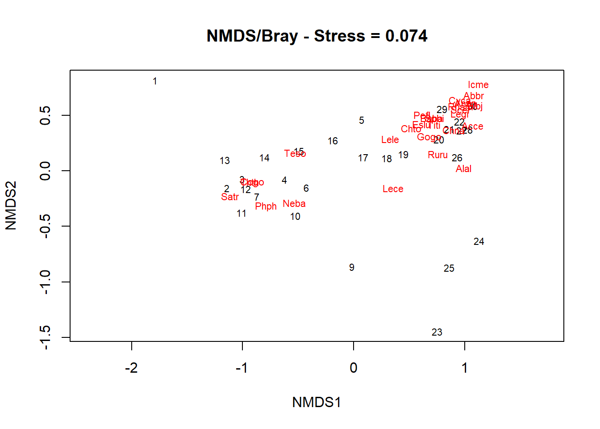

<!DOCTYPE html>
<html xmlns="http://www.w3.org/1999/xhtml" lang="en" xml:lang="en"><head>

<meta charset="utf-8">
<meta name="generator" content="quarto-1.3.450">

<meta name="viewport" content="width=device-width, initial-scale=1.0, user-scalable=yes">


<title>Ryan James J. Martinez - Multidimensional Scaling</title>
<style>
code{white-space: pre-wrap;}
span.smallcaps{font-variant: small-caps;}
div.columns{display: flex; gap: min(4vw, 1.5em);}
div.column{flex: auto; overflow-x: auto;}
div.hanging-indent{margin-left: 1.5em; text-indent: -1.5em;}
ul.task-list{list-style: none;}
ul.task-list li input[type="checkbox"] {
  width: 0.8em;
  margin: 0 0.8em 0.2em -1em; /* quarto-specific, see https://github.com/quarto-dev/quarto-cli/issues/4556 */ 
  vertical-align: middle;
}
/* CSS for syntax highlighting */
pre > code.sourceCode { white-space: pre; position: relative; }
pre > code.sourceCode > span { display: inline-block; line-height: 1.25; }
pre > code.sourceCode > span:empty { height: 1.2em; }
.sourceCode { overflow: visible; }
code.sourceCode > span { color: inherit; text-decoration: inherit; }
div.sourceCode { margin: 1em 0; }
pre.sourceCode { margin: 0; }
@media screen {
div.sourceCode { overflow: auto; }
}
@media print {
pre > code.sourceCode { white-space: pre-wrap; }
pre > code.sourceCode > span { text-indent: -5em; padding-left: 5em; }
}
pre.numberSource code
  { counter-reset: source-line 0; }
pre.numberSource code > span
  { position: relative; left: -4em; counter-increment: source-line; }
pre.numberSource code > span > a:first-child::before
  { content: counter(source-line);
    position: relative; left: -1em; text-align: right; vertical-align: baseline;
    border: none; display: inline-block;
    -webkit-touch-callout: none; -webkit-user-select: none;
    -khtml-user-select: none; -moz-user-select: none;
    -ms-user-select: none; user-select: none;
    padding: 0 4px; width: 4em;
  }
pre.numberSource { margin-left: 3em;  padding-left: 4px; }
div.sourceCode
  {   }
@media screen {
pre > code.sourceCode > span > a:first-child::before { text-decoration: underline; }
}
</style>


<script src="../../site_libs/quarto-nav/quarto-nav.js"></script>
<script src="../../site_libs/quarto-nav/headroom.min.js"></script>
<script src="../../site_libs/clipboard/clipboard.min.js"></script>
<script src="../../site_libs/quarto-search/autocomplete.umd.js"></script>
<script src="../../site_libs/quarto-search/fuse.min.js"></script>
<script src="../../site_libs/quarto-search/quarto-search.js"></script>
<meta name="quarto:offset" content="../../">
<script src="../../site_libs/quarto-html/quarto.js"></script>
<script src="../../site_libs/quarto-html/popper.min.js"></script>
<script src="../../site_libs/quarto-html/tippy.umd.min.js"></script>
<script src="../../site_libs/quarto-html/anchor.min.js"></script>
<link href="../../site_libs/quarto-html/tippy.css" rel="stylesheet">
<link href="../../site_libs/quarto-html/quarto-syntax-highlighting.css" rel="stylesheet" id="quarto-text-highlighting-styles">
<script src="../../site_libs/bootstrap/bootstrap.min.js"></script>
<link href="../../site_libs/bootstrap/bootstrap-icons.css" rel="stylesheet">
<link href="../../site_libs/bootstrap/bootstrap.min.css" rel="stylesheet" id="quarto-bootstrap" data-mode="light">
<script id="quarto-search-options" type="application/json">{
  "location": "navbar",
  "copy-button": false,
  "collapse-after": 3,
  "panel-placement": "end",
  "type": "textbox",
  "limit": 20,
  "language": {
    "search-no-results-text": "No results",
    "search-matching-documents-text": "matching documents",
    "search-copy-link-title": "Copy link to search",
    "search-hide-matches-text": "Hide additional matches",
    "search-more-match-text": "more match in this document",
    "search-more-matches-text": "more matches in this document",
    "search-clear-button-title": "Clear",
    "search-detached-cancel-button-title": "Cancel",
    "search-submit-button-title": "Submit",
    "search-label": "Search"
  }
}</script>

  <script src="https://polyfill.io/v3/polyfill.min.js?features=es6"></script>
  <script src="https://cdn.jsdelivr.net/npm/mathjax@3/es5/tex-chtml-full.js" type="text/javascript"></script>

<link rel="stylesheet" href="../../styles.css">
</head>

<body class="floating nav-fixed">

<div id="quarto-search-results"></div>
  <header id="quarto-header" class="headroom fixed-top">
    <nav class="navbar navbar-expand-lg navbar-dark ">
      <div class="navbar-container container-fluid">
      <div class="navbar-brand-container">
    <a class="navbar-brand" href="../../index.html">
    <span class="navbar-title">Ryan James J. Martinez</span>
    </a>
  </div>
            <div id="quarto-search" class="" title="Search"></div>
          <button class="navbar-toggler" type="button" data-bs-toggle="collapse" data-bs-target="#navbarCollapse" aria-controls="navbarCollapse" aria-expanded="false" aria-label="Toggle navigation" onclick="if (window.quartoToggleHeadroom) { window.quartoToggleHeadroom(); }">
  <span class="navbar-toggler-icon"></span>
</button>
          <div class="collapse navbar-collapse" id="navbarCollapse">
            <ul class="navbar-nav navbar-nav-scroll me-auto">
  <li class="nav-item">
    <a class="nav-link" href="../../projects/index.html" rel="" target="">
 <span class="menu-text">Projects</span></a>
  </li>  
</ul>
            <ul class="navbar-nav navbar-nav-scroll ms-auto">
  <li class="nav-item compact">
    <a class="nav-link" href="https://www.facebook.com/profile.php?id=100074061859253" rel="" target=""><i class="bi bi-facebook" role="img">
</i> 
 <span class="menu-text"></span></a>
  </li>  
  <li class="nav-item compact">
    <a class="nav-link" href="mailto:martinezryanjames08@gmail.com" rel="" target=""><i class="bi bi-envelope" role="img" aria-label="email">
</i> 
 <span class="menu-text"></span></a>
  </li>  
</ul>
            <div class="quarto-navbar-tools">
</div>
          </div> <!-- /navcollapse -->
      </div> <!-- /container-fluid -->
    </nav>
</header>
<!-- content -->
<div id="quarto-content" class="quarto-container page-columns page-rows-contents page-layout-article page-navbar">
<!-- sidebar -->
  <nav id="quarto-sidebar" class="sidebar collapse collapse-horizontal sidebar-navigation floating overflow-auto">
    <nav id="TOC" role="doc-toc" class="toc-active">
    <h2 id="toc-title">On this page</h2>
   
  <ul>
  <li><a href="#introduction" id="toc-introduction" class="nav-link active" data-scroll-target="#introduction">Introduction</a></li>
  <li><a href="#proximity-data" id="toc-proximity-data" class="nav-link" data-scroll-target="#proximity-data">Proximity Data</a></li>
  <li><a href="#multidimensional-scaling" id="toc-multidimensional-scaling" class="nav-link" data-scroll-target="#multidimensional-scaling">Multidimensional Scaling</a>
  <ul class="collapse">
  <li><a href="#metric-multidimensional-scaling" id="toc-metric-multidimensional-scaling" class="nav-link" data-scroll-target="#metric-multidimensional-scaling">Metric Multidimensional Scaling</a></li>
  <li><a href="#principal-coordinate-analysis" id="toc-principal-coordinate-analysis" class="nav-link" data-scroll-target="#principal-coordinate-analysis">Principal Coordinate Analysis</a></li>
  <li><a href="#nonmetric-multidimensional-scaling" id="toc-nonmetric-multidimensional-scaling" class="nav-link" data-scroll-target="#nonmetric-multidimensional-scaling">Nonmetric Multidimensional Scaling</a></li>
  <li><a href="#algorithm" id="toc-algorithm" class="nav-link" data-scroll-target="#algorithm">Algorithm</a></li>
  </ul></li>
  <li><a href="#model-evaluation-and-diagnostics" id="toc-model-evaluation-and-diagnostics" class="nav-link" data-scroll-target="#model-evaluation-and-diagnostics">Model Evaluation and Diagnostics</a>
  <ul class="collapse">
  <li><a href="#standardized-residual-sum-of-squares" id="toc-standardized-residual-sum-of-squares" class="nav-link" data-scroll-target="#standardized-residual-sum-of-squares">Standardized Residual Sum of Squares</a></li>
  <li><a href="#squared-standardized-residual-sum-of-squares" id="toc-squared-standardized-residual-sum-of-squares" class="nav-link" data-scroll-target="#squared-standardized-residual-sum-of-squares">Squared Standardized Residual Sum of Squares</a></li>
  </ul></li>
  <li><a href="#assumptions" id="toc-assumptions" class="nav-link" data-scroll-target="#assumptions">Assumptions</a></li>
  <li><a href="#procedure" id="toc-procedure" class="nav-link" data-scroll-target="#procedure">Procedure</a></li>
  <li><a href="#application-in-r" id="toc-application-in-r" class="nav-link" data-scroll-target="#application-in-r">Application in R</a>
  <ul class="collapse">
  <li><a href="#metric-multidimensional-scaling-example-barangays-of-iligan-city" id="toc-metric-multidimensional-scaling-example-barangays-of-iligan-city" class="nav-link" data-scroll-target="#metric-multidimensional-scaling-example-barangays-of-iligan-city">1. Metric Multidimensional Scaling Example: Barangays of Iligan City</a>
  <ul class="collapse">
  <li><a href="#data" id="toc-data" class="nav-link" data-scroll-target="#data">Data</a></li>
  <li><a href="#checking-assumptions" id="toc-checking-assumptions" class="nav-link" data-scroll-target="#checking-assumptions">Checking Assumptions</a></li>
  <li><a href="#calculating-haversine-distance" id="toc-calculating-haversine-distance" class="nav-link" data-scroll-target="#calculating-haversine-distance">Calculating Haversine Distance</a></li>
  </ul></li>
  <li><a href="#principal-coordinate-analysis-example-sparrow-data" id="toc-principal-coordinate-analysis-example-sparrow-data" class="nav-link" data-scroll-target="#principal-coordinate-analysis-example-sparrow-data">2. Principal Coordinate Analysis Example: Sparrow Data</a>
  <ul class="collapse">
  <li><a href="#checking-assumptions-1" id="toc-checking-assumptions-1" class="nav-link" data-scroll-target="#checking-assumptions-1">Checking Assumptions</a></li>
  <li><a href="#calculating-euclidean-distance" id="toc-calculating-euclidean-distance" class="nav-link" data-scroll-target="#calculating-euclidean-distance">Calculating Euclidean distance</a></li>
  <li><a href="#modeling" id="toc-modeling" class="nav-link" data-scroll-target="#modeling">Modeling</a></li>
  </ul></li>
  <li><a href="#nonmetric-multidimensional-scaling-example-doubs-fish-data" id="toc-nonmetric-multidimensional-scaling-example-doubs-fish-data" class="nav-link" data-scroll-target="#nonmetric-multidimensional-scaling-example-doubs-fish-data">3. Nonmetric Multidimensional Scaling Example: Doubs Fish Data</a>
  <ul class="collapse">
  <li><a href="#descriptive-statistics" id="toc-descriptive-statistics" class="nav-link" data-scroll-target="#descriptive-statistics">Descriptive Statistics</a></li>
  <li><a href="#checking-assumptions-2" id="toc-checking-assumptions-2" class="nav-link" data-scroll-target="#checking-assumptions-2">Checking Assumptions</a></li>
  </ul></li>
  </ul></li>
  <li><a href="#comparison" id="toc-comparison" class="nav-link" data-scroll-target="#comparison">Comparison</a></li>
  <li><a href="#conclusion" id="toc-conclusion" class="nav-link" data-scroll-target="#conclusion">Conclusion</a></li>
  <li><a href="#references" id="toc-references" class="nav-link" data-scroll-target="#references">References</a></li>
  </ul>
</nav>
</nav>
<div id="quarto-sidebar-glass" data-bs-toggle="collapse" data-bs-target="#quarto-sidebar,#quarto-sidebar-glass"></div>
<!-- margin-sidebar -->
    <div id="quarto-margin-sidebar" class="sidebar margin-sidebar">
    </div>
<!-- main -->
<main class="content" id="quarto-document-content">

<header id="title-block-header" class="quarto-title-block default">
<div class="quarto-title">
<h1 class="title">Multidimensional Scaling</h1>
</div>


<div class="quarto-title-meta">

    
  
    
  </div>
  

</header>

<section id="introduction" class="level1">
<h1>Introduction</h1>
<p>Dimension-reduction techniques transform complex, high-dimensional datasets into simpler two or three-dimensional visual representations. These methods ensure that the relative distances between data points are maintained, making it easier to analyze and interpret the spatial relationships and patterns inherent in the data.</p>
<p>Multidimensional Scaling (MDS) is a dimension-reduction technique designed to project high-dimensional data to two or three dimensions while preserving relative distances between observations. The fundamental aim is to place items so that the distances in the low-dimensional space as closely as possible match the given dissimilarities, usually measured on a qualitative or quantitative scale.</p>
<p>MDS is a powerful statistical technique for analyzing similarity or dissimilarity data, allowing researchers to visualize the level of similarity of individual cases of a dataset by representing data points in a low-dimensional space. This technique is particularly useful in fields such as psychology, ecology, and market research, where it can reveal underlying structures in complex data sets (Borg &amp; Groenen, 2005; Kruskal &amp; Wish, 1978) and where measuring the perceived differences between data can be pivotal.</p>
<p>This statistical technique not only helps uncover hidden relationships in data but also facilitates the creation of insightful visual representations.</p>
</section>
<section id="proximity-data" class="level1">
<h1>Proximity Data</h1>
<p>Proximity indicates closeness in any given context, which must be clearly defined before starting any analysis. For instance, using simple Euclidean distance is straightforward. Two fundamental measures, similarity and dissimilarity, are commonly used to assess how alike or different objects or individuals are. These measures are quantified through real functions, such as the similarity or dissimilarity between the <span class="math inline">\(r\)</span>-th and <span class="math inline">\(s\)</span>-th objects, typically non-negative. The dissimilarity of an object with itself is always zero, whereas its similarity with itself represents the highest possible value, normalized to one. The selection of these proximity measures depends on the specific problem being addressed. Sometimes, these measurements do not rely on any direct observations and are purely subjective, like a teacher evaluating students’ friendships. In other cases, these measures are derived from a data matrix and are referred to as similarity (or dissimilarity) coefficients.</p>
<table class="table">
<caption>Dissimilarity measures for quantitative data</caption>
<thead>
<tr class="header">
<th style="text-align: left;"><strong>Dissimilarity Measure</strong></th>
<th style="text-align: left;"><strong>Formula</strong></th>
</tr>
</thead>
<tbody>
<tr class="odd">
<td style="text-align: left;">Euclidean distance</td>
<td style="text-align: left;"><span class="math inline">\(\delta_{rs} = \sqrt{\sum_i (x_{ri} - x_{si})^2}\)</span></td>
</tr>
<tr class="even">
<td style="text-align: left;">Weighted Euclidean</td>
<td style="text-align: left;"><span class="math inline">\(\delta_{rs} = \sqrt{\sum_i w_i (x_{ri} - x_{si})^2}\)</span></td>
</tr>
<tr class="odd">
<td style="text-align: left;">Mahalanobis distance</td>
<td style="text-align: left;"><span class="math inline">\(\delta_{rs} = \sqrt{(x_{ri} - x_{si})' \Sigma^{-1} (x_{r} - x_{s})}\)</span></td>
</tr>
<tr class="even">
<td style="text-align: left;">City block metric</td>
<td style="text-align: left;"><span class="math inline">\(\delta_{rs} = \sum_i |x_{ri} - x_{si}|\)</span></td>
</tr>
<tr class="odd">
<td style="text-align: left;">Minkowski metric</td>
<td style="text-align: left;"><span class="math inline">\(\delta_{rs} = \left(\sum_i w_i|x_{ri} - x_{si}|^\lambda\right)^{1/\lambda}\)</span></td>
</tr>
<tr class="even">
<td style="text-align: left;">Canberra metric</td>
<td style="text-align: left;"><span class="math inline">\(\delta_{rs} = \sum_i \frac{|x_{ri} - x_{si}|}{x_{ri} + x_{si}}\)</span></td>
</tr>
<tr class="odd">
<td style="text-align: left;">Divergence</td>
<td style="text-align: left;"><span class="math inline">\(\delta_{rs} = \frac{1}{P} \sum_i \frac{(x_{ri} - x_{si})^2}{x_{ri} + x_{si}}\)</span></td>
</tr>
<tr class="even">
<td style="text-align: left;">Bray-Curtis</td>
<td style="text-align: left;"><span class="math inline">\(\delta_{rs} = \frac{1}{P} \sum_i |x_{ri} - x_{si}| \Big/ \sum_i (x_{ri} + x_{si})\)</span></td>
</tr>
<tr class="odd">
<td style="text-align: left;">Soergel</td>
<td style="text-align: left;"><span class="math inline">\(\delta_{rs} = \frac{1}{P} \sum_i |x_{ri} - x_{si}| \Big/ \sum_i \max(x_{ri}, x_{si})\)</span></td>
</tr>
<tr class="even">
<td style="text-align: left;">Bhattacharyya distance</td>
<td style="text-align: left;"><span class="math inline">\(\delta_{rs} = \sqrt{\sum_i \sqrt{x_{ri} \cdot x_{si}}}\)</span></td>
</tr>
<tr class="odd">
<td style="text-align: left;">Wave-Hedges</td>
<td style="text-align: left;"><span class="math inline">\(\delta_{rs} = \sum_i \left(1 - \frac{\min(x_{ri}, x_{si})}{\max(x_{ri}, x_{si})}\right)\)</span></td>
</tr>
<tr class="even">
<td style="text-align: left;">Angular separation</td>
<td style="text-align: left;"><span class="math inline">\(\delta_{rs} = 1 - \frac{\sum_i x_{ri}x_{si}}{\sqrt{\sum_i x_{ri}^2 \sum_i x_{si}^2}}\)</span></td>
</tr>
<tr class="odd">
<td style="text-align: left;">Correlation</td>
<td style="text-align: left;"><span class="math inline">\(\delta_{rs} = 1 - \frac{\sum_i (x_{ri} - \bar{x}_r)(x_{si} - \bar{x}_s)}{\sqrt{\sum_i (x_{ri} - \bar{x}_r)^2 \sum_i (x_{si} - \bar{x}_s)^2}}\)</span></td>
</tr>
</tbody>
</table>
<p>The dissimilarity metrics from the table above are the popular dissimilarities for quantitative data. The <span class="math inline">\(X = [x_{ri}]\)</span> denotes the data matrix obtained from <span class="math inline">\(n\)</span> objects on <span class="math inline">\(p\)</span> variables <span class="math inline">\((r=1,...,n; i=1,...,p)\)</span>. The vector for the <span class="math inline">\(r\)</span>-th object is denoted by <span class="math inline">\((x)_r\)</span> and so <span class="math inline">\(X = [\mathbf{x}_r^T]\)</span>. The <span class="math inline">\(\{w_i\}\)</span> are the weights, and the paramter <span class="math inline">\(\lambda\)</span> are chosen as parameters.</p>
<table class="table">
<caption>Summary of binary totals</caption>
<thead>
<tr class="header">
<th style="text-align: center;"></th>
<th style="text-align: center;">Object s</th>
<th style="text-align: center;"></th>
<th style="text-align: center;"></th>
</tr>
</thead>
<tbody>
<tr class="odd">
<td style="text-align: center;">Object r</td>
<td style="text-align: center;">1</td>
<td style="text-align: center;">0</td>
<td style="text-align: center;"></td>
</tr>
<tr class="even">
<td style="text-align: center;">1</td>
<td style="text-align: center;"><span class="math inline">\(a\)</span></td>
<td style="text-align: center;"><span class="math inline">\(b\)</span></td>
<td style="text-align: center;"><span class="math inline">\(a + b\)</span></td>
</tr>
<tr class="odd">
<td style="text-align: center;">0</td>
<td style="text-align: center;"><span class="math inline">\(c\)</span></td>
<td style="text-align: center;"><span class="math inline">\(d\)</span></td>
<td style="text-align: center;"><span class="math inline">\(c + d\)</span></td>
</tr>
<tr class="even">
<td style="text-align: center;"></td>
<td style="text-align: center;"><span class="math inline">\(a+c\)</span></td>
<td style="text-align: center;"><span class="math inline">\(b+d\)</span></td>
<td style="text-align: center;"><span class="math inline">\(p = a+b+c+d\)</span></td>
</tr>
</tbody>
</table>
<p>When dealing with binary variables, it’s typical to calculate a similarity coefficient and then convert this into a dissimilarity coefficient using a formula like <span class="math inline">\(\delta_{rs} = 1- s_{rs}\)</span>. This similarity calculation between two objects, r and s, relies on Table 2, which displays how many variables, <span class="math inline">\(a\)</span>, out of the total <span class="math inline">\(p\)</span> variables have both objects scoring “1”. It also shows the number of variables, <span class="math inline">\(b\)</span>, where <span class="math inline">\(r\)</span> scores “1” and s scores “0”, and so on. Table 3 outlines various similarity coefficients that are derived from these four counts: <span class="math inline">\(a, b, c, d\)</span>. Depending on the specific situation, certain coefficients may be more suitable, and often, experimenting with several options is recommended to find the most robust choice. Hubalek (1982) provides an extensive list of these similarity coefficients for binary data, which can be quite useful for in-depth analysis.</p>
<table class="table">
<caption>Similarity coefficients for Binary Data</caption>
<thead>
<tr class="header">
<th style="text-align: left;"><strong>Coefficient</strong></th>
<th style="text-align: left;"><strong>Formula</strong></th>
</tr>
</thead>
<tbody>
<tr class="odd">
<td style="text-align: left;">Braun, Blanque</td>
<td style="text-align: left;"><span class="math inline">\(s_{rs} = \frac{a}{\max((a+b), (a+c))}\)</span></td>
</tr>
<tr class="even">
<td style="text-align: left;">Czekanowski, Sorensen, Dice</td>
<td style="text-align: left;"><span class="math inline">\(s_{rs} = \frac{2a+b+c}{2a}\)</span></td>
</tr>
<tr class="odd">
<td style="text-align: left;">Hamman</td>
<td style="text-align: left;"><span class="math inline">\(s_{rs} = \frac{a - (b+c) + d}{a+b+c+d}\)</span></td>
</tr>
<tr class="even">
<td style="text-align: left;">Jaccard coefficient</td>
<td style="text-align: left;"><span class="math inline">\(s_{rs} = \frac{a}{a+b+c}\)</span></td>
</tr>
<tr class="odd">
<td style="text-align: left;">Kulczynski</td>
<td style="text-align: left;"><span class="math inline">\(s_{rs} = \frac{a}{b+c}\)</span></td>
</tr>
<tr class="even">
<td style="text-align: left;">Kulczynski</td>
<td style="text-align: left;"><span class="math inline">\(s_{rs} = \frac{1}{2} \left(\frac{a}{a+b} + \frac{a}{a+c}\right)\)</span></td>
</tr>
<tr class="odd">
<td style="text-align: left;">Michael</td>
<td style="text-align: left;"><span class="math inline">\(s_{rs} = \frac{(a+d)^2 - (b+c)^2}{4(ad-bc)}\)</span></td>
</tr>
<tr class="even">
<td style="text-align: left;">Mountford</td>
<td style="text-align: left;"><span class="math inline">\(s_{rs} = \frac{2a}{a+b+c+2bc}\)</span></td>
</tr>
<tr class="odd">
<td style="text-align: left;">Mozley, Margalef</td>
<td style="text-align: left;"><span class="math inline">\(s_{rs} = \frac{a(b+c)+2bc}{a(a+b+c+d)}\)</span></td>
</tr>
<tr class="even">
<td style="text-align: left;">Ochiai</td>
<td style="text-align: left;"><span class="math inline">\(s_{rs} = \sqrt{\frac{a}{(a+b)(a+c)}}\)</span></td>
</tr>
<tr class="odd">
<td style="text-align: left;">Phi</td>
<td style="text-align: left;"><span class="math inline">\(s_{rs} = \frac{\sqrt{(a+b)(a+c)(d+b)(d+c)}}{ad-bc}\)</span></td>
</tr>
<tr class="even">
<td style="text-align: left;">Rogers, Tanimoto</td>
<td style="text-align: left;"><span class="math inline">\(s_{rs} = \frac{a+d}{a+2b+2c+d}\)</span></td>
</tr>
<tr class="odd">
<td style="text-align: left;">Russell, Rao</td>
<td style="text-align: left;"><span class="math inline">\(s_{rs} = \frac{a}{a+b+c+d}\)</span></td>
</tr>
<tr class="even">
<td style="text-align: left;">Simple matching coefficient</td>
<td style="text-align: left;"><span class="math inline">\(s_{rs} = \frac{a+d}{a+b+c+d}\)</span></td>
</tr>
<tr class="odd">
<td style="text-align: left;">Simpson</td>
<td style="text-align: left;"><span class="math inline">\(s_{rs} = \frac{a}{\min((a+b), (a+c))}\)</span></td>
</tr>
<tr class="even">
<td style="text-align: left;">Sokal, Sneath, Anderberg</td>
<td style="text-align: left;"><span class="math inline">\(s_{rs} = \frac{a}{a+2(b+c)}\)</span></td>
</tr>
<tr class="odd">
<td style="text-align: left;">Yule</td>
<td style="text-align: left;"><span class="math inline">\(s_{rs} = \frac{ad-bc}{ad+bc}\)</span></td>
</tr>
</tbody>
</table>
<p>For categorical data, if two objects, <span class="math inline">\(r\)</span> and <span class="math inline">\(s\)</span>, fall into the same category, their dissimilarity score <span class="math inline">\(\delta_{rs}\)</span> is zero, indicating perfect similarity. Conversely, if they are in different categories, the score is one, reflecting complete dissimilarity. However, in cases where the data is a mix of binary, quantitative, and categorical types, calculating similarity becomes more complex.</p>
<p>John Gower, in 1971, proposed a flexible method to calculate a general similarity coefficient that effectively handles mixed data types. His formula is: <span class="math display">\[s_{rs} = \frac{\sum_{i=1}^p w_{rsi}s_{rsi}}{\sum_{i=1}^p w_{rsi}}\]</span> Here, <span class="math inline">\(s_{rsi}\)</span> quantifies the similarity for the i-th variable between objects <span class="math inline">\(r\)</span> and <span class="math inline">\(s\)</span>. The weight <span class="math inline">\(w_{rsi}\)</span> is set to one when the i-th variable can be directly compared between the two objects and zero otherwise. For quantitative data, this similarity, <span class="math inline">\(s_{rsi}\)</span> is calculated as <span class="math inline">\(1- \frac{x_{ri}- x_{si}}{R_i}\)</span>, where <span class="math inline">\(R_i\)</span> represents the range of the <span class="math inline">\(i\)</span>-th variable. In binary scenarios where data indicate presence or absence, the similarity is one if both objects either present or absent, and zero otherwise. For non-categorical data, the similarity is set to one when both objects belong to the same category, and zero otherwise. This approach ensures that the measure of similarity is nuanced and reflective of the data’s complexity.</p>
</section>
<section id="multidimensional-scaling" class="level1">
<h1>Multidimensional Scaling</h1>
<!-- # ```{r, echo=FALSE, fig.cap="MDS variants", out.width = '80%', fig.align='center'} -->
<!-- # knitr::include_graphics("D:/Ryan/College/MS/Summer/STT258/Multidimensional Scaling/MDS variants.png") -->
<!-- # ``` -->
<!-- Source: \url{https://www.youtube.com/watch?v=VKSJayDi_lQ} -->
<p>MDS blends elements of classical geometry and metric tensor mathematics, focusing primarily on reducing distances and dimensions to simpler forms. Essentially, MDS turns a complex matrix of item similarities or dissimilarities into a visual map, where points represent items in a lower-dimensional space. The key difference in MDS techniques is between metric and nonmetric methods.</p>
<section id="metric-multidimensional-scaling" class="level2">
<h2 class="anchored" data-anchor-id="metric-multidimensional-scaling">Metric Multidimensional Scaling</h2>
<p>Given a number of objects with their dissimilarities recorded, metric Multidimensional Scaling (mMDS) aims to arrange these objects as points in a space such that the spatial distances between the points match the given dissimilarities. Each dissimilarity value, denoted by <span class="math inline">\(\delta_{rs}\)</span> is transformed by a continuous, monotonic function <span class="math inline">\(f\)</span> to determine the distance <span class="math inline">\(d_{rs}\)</span> between points in this space, where <span class="math display">\[d_{rs} = f(\delta_{rs})\]</span> This method has its roots in classical scaling, a technique developed in the 1930s by Young and Householder (1938). They demonstrated that starting from a matrix of distances among all points in a Euclidean space, it’s possible to compute coordinates for these points that preserve these distances. The approach gained widespread recognition when Torgerson (1952) popularized it by adapting the method to use dissimilarities instead of actual distances, thus broadening its application. <!-- Metric MDS, also known as classical scaling, utilizes distances between pairs of objects in a dataset to position each object in a lower-dimensional space. This technique assumes that distances are measured on a metric scale and aims to preserve these distances as accurately as possible. The primary goal of metric MDS is to maintain the pairwise distance between points, minimizing the discrepancy between the "high-dimensional" original distances and the distances in the projected lower-dimensional space. This is typically achieved by minimizing a stress function. --></p>
</section>
<section id="principal-coordinate-analysis" class="level2">
<h2 class="anchored" data-anchor-id="principal-coordinate-analysis">Principal Coordinate Analysis</h2>
<p>Principal Coordinate Analysis (PCoA), often interchangeable with metric MDS in many contexts, also focuses on preserving the actual distances between pairs of objects in the dimension-reduced space. The approach starts with a distance matrix and applies eigenvalue decomposition to derive the principal coordinates. PCoA can handle any symmetric distance matrix and thus provides a flexible method for dimensionality reduction. Primary distinction to Principal Component Analysis (PCA) is that PCoA uses distance matrix of the items while PCA utilizes covariance matrix of the exploratory variables.</p>
<p>To grasp the link between PCoA and PCA, it’s essential to revisit some foundational concepts and introduce new insights from these methods:</p>
<ol>
<li><p>Principal Components as Linear Combinations: &nbsp;</p>
<p>Each principal component is a linear combination of the original variables, represented by the formula: <span class="math display">\[Z_i = a_{i1}X_1 + a_{i2}X_2 + \dots + a_{ip}X_p\]</span> This showcases how principal components simplify the data by transforming the original variables into new axes that capture the majority of the data’s variance.</p></li>
<li><p>Covariance and Similarity Matrices: &nbsp;</p>
<p>When the variables have zero mean, the covariance matrix <span class="math inline">\(C\)</span> is calculated as: <span class="math display">\[\mathbf{C} = \frac{\mathbf{X}^T\mathbf{X}}{n-1}\]</span> PCA uses this covariance matrix to derive eigenvalues and eigenvectors that define the principal components. In contrast, PCoA uses a matrix <span class="math inline">\(\mathbf{S} = \mathbf{XX}^T\)</span>, which represents similarities or dissimilarities, making it suitable for data that doesn’t naturally fit into a covariance analysis framework.</p></li>
<li><p>Calculating and Interpreting Components: &nbsp;</p>
<p>The principal components are obtained through: <span class="math display">\[\mathbf{Z} = \mathbf{XA}'\]</span> where <span class="math inline">\(\mathbf{Z}\)</span> includes the principal component scores, and <span class="math inline">\(\mathbf{A}'\)</span> is the matrix of eigenvectors’ transpose. This transformation allows for the original data matrix <span class="math inline">\(\mathbf{X}\)</span> to be reconstructed from <span class="math inline">\(\mathbf{Z}\)</span> and <span class="math inline">\(\mathbf{A}\)</span>: <span class="math display">\[\mathbf{X} = \mathbf{ZA}\]</span> Unlike PCA, PCoA often scales components differently, affecting how they’re interpreted compared to PCA.</p></li>
</ol>
</section>
<section id="nonmetric-multidimensional-scaling" class="level2">
<h2 class="anchored" data-anchor-id="nonmetric-multidimensional-scaling">Nonmetric Multidimensional Scaling</h2>
<p>The non-metric Multidimensional Scaling (nMDS) method was initially conceptualized by Shepard in the early 1960s and was further refined by Kruskal shortly thereafter. This approach involves arranging a set of <span class="math inline">\(n\)</span> objects based on their dissimilarities, <span class="math inline">\(\delta_{rs}\)</span> into a configuration of <span class="math inline">\(n\)</span> points within typically Euclidean space. Each object corresponds to a point such that the spatial layout reflects the dissimilarities as accurately as possible.</p>
<p>NMDS relaxes the requirement of preserving the exact distances and focuses instead on preserving the rank order of distances. This method is particularly useful when the distances do not adhere strictly to a metric scale or when the exact magnitudes of distances are less important than the order of these distances. The primary aim here is to maintain the ordinal relationship of the distances, such as ensuring that if object A is closer to object B than to object C in high-dimensional space, the same should be true in the reduced space. This involves an iterative process where the configuration is adjusted to minimize a stress function shown in the diagnositc section.</p>
</section>
<section id="algorithm" class="level2">
<h2 class="anchored" data-anchor-id="algorithm">Algorithm</h2>
<p>The algorithm for recovering coordinates from distances between pairs of points is as follows:</p>
<ol>
<li><p>Form matrix <span class="math inline">\(\mathcal{A} = -\frac{1}{2} \delta_{rs}^2\)</span></p></li>
<li><p>Form matrix <span class="math inline">\(\mathcal{B} = \mathcal{HAH}\)</span>, where <span class="math inline">\(\mathcal{H}\)</span> is the centering matrix <span class="math inline">\(\mathcal{H} = \mathcal{I}- n^{-1} \mathbf{1}_n\mathbf{1}_n^T\)</span>, where <span class="math inline">\(\mathcal{I}\)</span> is the identity matrix, and <span class="math inline">\(\mathbf{1}_n\)</span> is a vector of ones.</p></li>
<li><p>Find the spectral decomposition of <span class="math inline">\(\mathcal{B}, \mathcal{B} = \mathcal{V} \Lambda \mathcal{V}^T\)</span>, where <span class="math inline">\(\Lambda\)</span> is the diagonal matrix formed from eigenvalues of <span class="math inline">\(\mathcal{B}\)</span>, and <span class="math inline">\(\mathcal{V}\)</span> is the matrix of corresponding eigenvectors.</p></li>
<li><p>If the points were originally in a <span class="math inline">\(p\)</span>-dimensional space, the first <span class="math inline">\(p\)</span> eigenvalues of <span class="math inline">\(\mathcal{B}\)</span> are nonzero and the remaining <span class="math inline">\(n-p\)</span> are zero. Discard these from <span class="math inline">\(\Lambda\)</span> (rename as <span class="math inline">\(\Lambda_1\)</span>, and discard the corresponding eigenvalues from <span class="math inline">\(\mathcal{V}\)</span> (rename as <span class="math inline">\(\mathcal{V}_1\)</span>).</p></li>
<li><p>Find <span class="math inline">\(\mathcal{X} = \mathcal{V}_1 \Lambda_1^{1/2},\)</span> and coordinates of the points are given by the row of <span class="math inline">\(\mathcal{X}\)</span>.</p></li>
</ol>
</section>
</section>
<section id="model-evaluation-and-diagnostics" class="level1">
<h1>Model Evaluation and Diagnostics</h1>
<section id="standardized-residual-sum-of-squares" class="level2">
<h2 class="anchored" data-anchor-id="standardized-residual-sum-of-squares">Standardized Residual Sum of Squares</h2>
<p><span class="math display">\[STRESS(q) = \left\{\dfrac{\sum\sum_{r &lt; s}\left(d_{rs}^{(q)} - \hat{d}_{rs}^{(q)}\right)^2}{\sum\sum_{r &lt; s} \left(d_{rs}^{(q)}\right)^2}\right\}^{1/2}\]</span> where</p>
<ul>
<li><p><span class="math inline">\(d_{rs}^{(q)}\)</span> is the distance between object <span class="math inline">\(r\)</span> and object <span class="math inline">\(s\)</span> for <span class="math inline">\(q\)</span> configuration; and</p></li>
<li><p><span class="math inline">\(\hat{d}_{rs}^{(q)}\)</span> is the regression of <span class="math inline">\(d_{rs}^{(q)}\)</span> and <span class="math inline">\(\delta_{rs}\)</span>(data distance).</p></li>
</ul>
<p>Kruskall (1978) suggests the stress be informally interpreted according to the guidelines:</p>
<table class="table">
<caption>Stress Value Category</caption>
<thead>
<tr class="header">
<th style="text-align: left;">Stress</th>
<th style="text-align: left;">Goodness of fit</th>
</tr>
</thead>
<tbody>
<tr class="odd">
<td style="text-align: left;">20%</td>
<td style="text-align: left;">Poor</td>
</tr>
<tr class="even">
<td style="text-align: left;">10%</td>
<td style="text-align: left;">Fair</td>
</tr>
<tr class="odd">
<td style="text-align: left;">5%</td>
<td style="text-align: left;">Good</td>
</tr>
<tr class="even">
<td style="text-align: left;">2.5%</td>
<td style="text-align: left;">Excellent</td>
</tr>
<tr class="odd">
<td style="text-align: left;">0%</td>
<td style="text-align: left;">Perfect</td>
</tr>
</tbody>
</table>
</section>
<section id="squared-standardized-residual-sum-of-squares" class="level2">
<h2 class="anchored" data-anchor-id="squared-standardized-residual-sum-of-squares">Squared Standardized Residual Sum of Squares</h2>
<p><span class="math display">\[SSTRESS = \left\{\dfrac{\sum\sum_{r &lt; s}\left(d_{rs}^2 - \hat{d}_{rs}^2\right)^2}{\sum\sum_{r &lt; s} \left(d_{rs}\right)^4}\right\}^{1/2}\]</span> where</p>
<ul>
<li><p><span class="math inline">\(d_{rs}\)</span> is the distance between object <span class="math inline">\(r\)</span> and object <span class="math inline">\(s\)</span> for the configuration; and</p></li>
<li><p><span class="math inline">\(\hat{d}_{rs}\)</span> is the regression of <span class="math inline">\(d_{rs}\)</span> and <span class="math inline">\(\delta_{rs}\)</span>(data distance).</p></li>
</ul>
</section>
</section>
<section id="assumptions" class="level1">
<h1>Assumptions</h1>
<p>Because MDS, like cluster analysis, operates directly on dissimilarities, no statistical distribution assumptions are necessary. There are, however, other important assumptions and these assumptions are:</p>
<ol>
<li><p>The similarity values are symmetric(distance from A to B is the same as that from B to A); &nbsp;</p>
<p>This assumption states that the measurement of similarity or dissimilarity between any two points in the dataset should be the same. For instance, if you’re measuring the distance or dissimilarity between two cities, A and B, the assumption is that the distance from A to B is identical to the distance from B to A. This is typical in cases where the dissimilarity measure is based on inherent characteristics that do not depend on order or direction, such as physical distance or Euclidean distance. When this assumption holds, the dissimilarity matrix used in MDS is symmetric. This simplifies the computation and interpretation of the spatial configuration that MDS produces.</p></li>
<li><p>No similar points and; &nbsp;</p>
<p>If two points are identical (i.e., they have zero dissimilarity between them), it could potentially distort the spatial representation generated by MDS. Identical points can lead to issues such as ’ties’ in the data, which might complicate the ranking of dissimilarities and affect the stress calculation.</p></li>
<li><p>No missing data &nbsp;</p>
<p>Missing data in the dissimilarity matrix can lead to incomplete pairwise comparisons. This complicates the algorithm’s ability to accurately place the points in the new spatial configuration. If data is missing, the MDS algorithm may not be able to correctly calculate distances that can introduce biases or inaccuracies. Complete data ensure that the distance calculations are based on all available and relevant information and this leads to a more reliable multidimensional scaling output.</p></li>
</ol>
</section>
<section id="procedure" class="level1">
<h1>Procedure</h1>
<p>The algorithm is summarized in these steps:</p>
<ol>
<li><p>Calculate the distance matrix</p></li>
<li><p>A starting configuration is set up for the <span class="math inline">\(N\)</span> objects in <span class="math inline">\(q\)</span> dimensions.</p></li>
<li><p>Take the Euclidean distances between the objects are calculated for the assumed configuration.</p></li>
<li><p>A regression of <span class="math inline">\(d_{rs}\)</span> on <span class="math inline">\(\delta_{rs}\)</span> is performed. The regression can be linear, polynomial, or monotonic.</p></li>
<li><p>The goodness of fit between the configuration distances and the disparities is measured by a suitable statistic (STRESS, SSTRESS).</p></li>
<li><p>Plot the stress plot across different <span class="math inline">\(q\)</span> dimensions and choose the best number of dimensions.</p></li>
</ol>
<p>Now that we’ve covered the fundamental concepts, let’s move on to the practical application of MDS. In the following sections, we will explore how MDS can be implemented to uncover patterns and relationships in real-world data sets. Through detailed examples, we’ll demonstrate the steps involved and discuss the insights that can be gained from each MDS technique.</p>
</section>
<section id="application-in-r" class="level1">
<h1>Application in R</h1>
<p>In the application, three examples will be provided in total, covering mMDS, PCoA, and nMDS respectively. Each example is designed to illustrate the unique features and benefits of these different multidimensional scaling techniques. This will help users understand how each method can be effectively applied to analyze and visualize data sets. Additionally, all the applications will be coded in R, offering hands-on examples that users can follow and adapt for their specific data analysis needs. The code below are the helper packages that will allow us in performing MDS;</p>
<div class="cell">
<div class="sourceCode cell-code" id="cb1"><pre class="sourceCode r code-with-copy"><code class="sourceCode r"><span id="cb1-1"><a href="#cb1-1" aria-hidden="true" tabindex="-1"></a><span class="co"># Data Wrangling</span></span>
<span id="cb1-2"><a href="#cb1-2" aria-hidden="true" tabindex="-1"></a><span class="fu">library</span>(dplyr)</span>
<span id="cb1-3"><a href="#cb1-3" aria-hidden="true" tabindex="-1"></a><span class="co"># Web Scraping</span></span>
<span id="cb1-4"><a href="#cb1-4" aria-hidden="true" tabindex="-1"></a><span class="fu">library</span>(rvest)</span>
<span id="cb1-5"><a href="#cb1-5" aria-hidden="true" tabindex="-1"></a><span class="fu">library</span>(glue)</span>
<span id="cb1-6"><a href="#cb1-6" aria-hidden="true" tabindex="-1"></a><span class="fu">library</span>(readxl)</span>
<span id="cb1-7"><a href="#cb1-7" aria-hidden="true" tabindex="-1"></a><span class="co"># Haversine Distance</span></span>
<span id="cb1-8"><a href="#cb1-8" aria-hidden="true" tabindex="-1"></a><span class="fu">library</span>(geosphere)</span>
<span id="cb1-9"><a href="#cb1-9" aria-hidden="true" tabindex="-1"></a><span class="co"># Beautiful plots</span></span>
<span id="cb1-10"><a href="#cb1-10" aria-hidden="true" tabindex="-1"></a><span class="fu">library</span>(ggplot2)</span>
<span id="cb1-11"><a href="#cb1-11" aria-hidden="true" tabindex="-1"></a><span class="fu">library</span>(ggpubr)</span>
<span id="cb1-12"><a href="#cb1-12" aria-hidden="true" tabindex="-1"></a><span class="fu">library</span>(magrittr)</span>
<span id="cb1-13"><a href="#cb1-13" aria-hidden="true" tabindex="-1"></a><span class="fu">library</span>(ggfortify)</span>
<span id="cb1-14"><a href="#cb1-14" aria-hidden="true" tabindex="-1"></a><span class="co"># MDS/PCoA/NDMS</span></span>
<span id="cb1-15"><a href="#cb1-15" aria-hidden="true" tabindex="-1"></a><span class="fu">library</span>(MASS)</span>
<span id="cb1-16"><a href="#cb1-16" aria-hidden="true" tabindex="-1"></a><span class="fu">library</span>(ade4)</span>
<span id="cb1-17"><a href="#cb1-17" aria-hidden="true" tabindex="-1"></a><span class="fu">library</span>(vegan)</span></code><button title="Copy to Clipboard" class="code-copy-button"><i class="bi"></i></button></pre></div>
</div>
<section id="metric-multidimensional-scaling-example-barangays-of-iligan-city" class="level2">
<h2 class="anchored" data-anchor-id="metric-multidimensional-scaling-example-barangays-of-iligan-city">1. Metric Multidimensional Scaling Example: Barangays of Iligan City</h2>
<div class="cell" data-layout-align="center">
<div class="cell-output-display">
<div class="quarto-figure quarto-figure-center">
<figure class="figure">
<p></p>
<figcaption class="figure-caption">Map of Iligan</figcaption>
</figure>
</div>
</div>
</div>
<p>The goal for this data is to visualize and understand the spatial relationships among different barangays based on their geographic distances. We want to see if MDS accurately captures the original distances between each barangay in Iligan City. After performing MDS, we expect that Barangay Buru-un will be shown to be closer to Barangay Ditucalan or Maria Cristina, as opposed to its distance from Rogongon. The table showcases the list of barangays in Iligan City</p>
<table class="table">
<caption>List of Barangays</caption>
<tbody>
<tr class="odd">
<td style="text-align: center;">Abuno</td>
<td style="text-align: center;">Hinaplanon</td>
<td style="text-align: center;">Pala-o</td>
<td style="text-align: center;">Saray</td>
</tr>
<tr class="even">
<td style="text-align: center;">Acmac</td>
<td style="text-align: center;">Hindang</td>
<td style="text-align: center;">Panoroganan</td>
<td style="text-align: center;">Suarez</td>
</tr>
<tr class="odd">
<td style="text-align: center;">Bagong Silang</td>
<td style="text-align: center;">Kabacsanan</td>
<td style="text-align: center;">Poblacion</td>
<td style="text-align: center;">Tambacan</td>
</tr>
<tr class="even">
<td style="text-align: center;">Bonbonon</td>
<td style="text-align: center;">Kalilangan</td>
<td style="text-align: center;">Puga-an</td>
<td style="text-align: center;">Tibanga</td>
</tr>
<tr class="odd">
<td style="text-align: center;">Bunawan</td>
<td style="text-align: center;">Kiwalan</td>
<td style="text-align: center;">Rogongon</td>
<td style="text-align: center;">Tipanoy</td>
</tr>
<tr class="even">
<td style="text-align: center;">Buru-un</td>
<td style="text-align: center;">Lanipao</td>
<td style="text-align: center;">San Miguel</td>
<td style="text-align: center;">Tomas L. Cabili</td>
</tr>
<tr class="odd">
<td style="text-align: center;">Dalipuga</td>
<td style="text-align: center;">Luinab</td>
<td style="text-align: center;">San Roque</td>
<td style="text-align: center;">Upper Tominobo</td>
</tr>
<tr class="even">
<td style="text-align: center;">Del Carmen</td>
<td style="text-align: center;">Mahayahay</td>
<td style="text-align: center;">Santa Elena</td>
<td style="text-align: center;">Tubod</td>
</tr>
<tr class="odd">
<td style="text-align: center;">Digkilaan</td>
<td style="text-align: center;">Mainit</td>
<td style="text-align: center;">Santa Filomena</td>
<td style="text-align: center;">Ubaldo Laya</td>
</tr>
<tr class="even">
<td style="text-align: center;">Ditucalan</td>
<td style="text-align: center;">Mandulog</td>
<td style="text-align: center;">Santiago</td>
<td style="text-align: center;">Upper Hinaplanon</td>
</tr>
<tr class="odd">
<td style="text-align: center;">Dulag</td>
<td style="text-align: center;">Maria Cristina</td>
<td style="text-align: center;">Santo Rosario</td>
<td style="text-align: center;">Villa Verde</td>
</tr>
</tbody>
</table>
<section id="data" class="level3">
<h3 class="anchored" data-anchor-id="data">Data</h3>
<p>The data for this application includes the coordinates of the barangay halls, which represent the locations of each barangay. The coordinates were collected using web scraping.</p>
<div class="cell">
<div class="sourceCode cell-code" id="cb2"><pre class="sourceCode r code-with-copy"><code class="sourceCode r"><span id="cb2-1"><a href="#cb2-1" aria-hidden="true" tabindex="-1"></a>barangays <span class="ot">&lt;-</span> <span class="fu">read.delim</span>(<span class="st">"Barangays.txt"</span>, <span class="at">header =</span> <span class="cn">FALSE</span>)</span>
<span id="cb2-2"><a href="#cb2-2" aria-hidden="true" tabindex="-1"></a>coordinates <span class="ot">&lt;-</span> <span class="fu">data.frame</span>()</span>
<span id="cb2-3"><a href="#cb2-3" aria-hidden="true" tabindex="-1"></a><span class="cf">for</span>(i <span class="cf">in</span> <span class="dv">1</span><span class="sc">:</span><span class="fu">nrow</span>(barangays)){</span>
<span id="cb2-4"><a href="#cb2-4" aria-hidden="true" tabindex="-1"></a>  barangay <span class="ot">&lt;-</span> <span class="fu">tolower</span>(barangays[i, ])</span>
<span id="cb2-5"><a href="#cb2-5" aria-hidden="true" tabindex="-1"></a>  website <span class="ot">&lt;-</span> <span class="fu">glue</span>(<span class="st">"https://www.philatlas.com/mindanao/r10/iligan/{barangay}.html"</span>)</span>
<span id="cb2-6"><a href="#cb2-6" aria-hidden="true" tabindex="-1"></a>  h <span class="ot">&lt;-</span> <span class="fu">read_html</span>(website)</span>
<span id="cb2-7"><a href="#cb2-7" aria-hidden="true" tabindex="-1"></a>  latitude <span class="ot">&lt;-</span> <span class="fu">html_elements</span>(h, <span class="at">xpath=</span><span class="st">'.//span[@id="latitude"]'</span>) <span class="sc">%&gt;%</span> </span>
<span id="cb2-8"><a href="#cb2-8" aria-hidden="true" tabindex="-1"></a>    <span class="fu">html_text</span>()</span>
<span id="cb2-9"><a href="#cb2-9" aria-hidden="true" tabindex="-1"></a>  longitude <span class="ot">&lt;-</span> <span class="fu">html_elements</span>(h, <span class="at">xpath=</span><span class="st">'.//span[@id="longitude"]'</span>) <span class="sc">%&gt;%</span> </span>
<span id="cb2-10"><a href="#cb2-10" aria-hidden="true" tabindex="-1"></a>    <span class="fu">html_text</span>()</span>
<span id="cb2-11"><a href="#cb2-11" aria-hidden="true" tabindex="-1"></a>  c <span class="ot">&lt;-</span> <span class="fu">cbind.data.frame</span>(barangay, </span>
<span id="cb2-12"><a href="#cb2-12" aria-hidden="true" tabindex="-1"></a>                        <span class="at">latitude =</span> <span class="fu">as.numeric</span>(latitude), </span>
<span id="cb2-13"><a href="#cb2-13" aria-hidden="true" tabindex="-1"></a>                        <span class="at">longitude =</span> <span class="fu">as.numeric</span>(longitude))</span>
<span id="cb2-14"><a href="#cb2-14" aria-hidden="true" tabindex="-1"></a>  coordinates <span class="ot">&lt;-</span> <span class="fu">rbind.data.frame</span>(coordinates, c)</span>
<span id="cb2-15"><a href="#cb2-15" aria-hidden="true" tabindex="-1"></a>}</span>
<span id="cb2-16"><a href="#cb2-16" aria-hidden="true" tabindex="-1"></a>knitr<span class="sc">::</span><span class="fu">kable</span>(<span class="fu">head</span>(coordinates))</span></code><button title="Copy to Clipboard" class="code-copy-button"><i class="bi"></i></button></pre></div>
</div>
<div class="cell">
<div class="cell-output-display">
<table class="table table-sm table-striped small">
<caption>Head of Iligan City Barangays Data</caption>
<thead>
<tr class="header">
<th style="text-align: left;">barangay</th>
<th style="text-align: right;">latitude</th>
<th style="text-align: right;">longitude</th>
</tr>
</thead>
<tbody>
<tr class="odd">
<td style="text-align: left;">abuno</td>
<td style="text-align: right;">8.1846</td>
<td style="text-align: right;">124.2571</td>
</tr>
<tr class="even">
<td style="text-align: left;">acmac</td>
<td style="text-align: right;">8.2740</td>
<td style="text-align: right;">124.2649</td>
</tr>
<tr class="odd">
<td style="text-align: left;">bagong-silang</td>
<td style="text-align: right;">8.2418</td>
<td style="text-align: right;">124.2520</td>
</tr>
<tr class="even">
<td style="text-align: left;">bonbonon</td>
<td style="text-align: right;">8.2667</td>
<td style="text-align: right;">124.2902</td>
</tr>
<tr class="odd">
<td style="text-align: left;">bunawan</td>
<td style="text-align: right;">8.3023</td>
<td style="text-align: right;">124.3028</td>
</tr>
<tr class="even">
<td style="text-align: left;">buru-un</td>
<td style="text-align: right;">8.1872</td>
<td style="text-align: right;">124.1688</td>
</tr>
</tbody>
</table>
</div>
</div>
<p>The table above shows the first six of the barangays only. Also, the table illustrates the respective latitude and longitude to each of the barangays in Iligan city. Now that we are done the web scraping part, we proceed to the checking of assumptions.</p>
</section>
<section id="checking-assumptions" class="level3">
<h3 class="anchored" data-anchor-id="checking-assumptions">Checking Assumptions</h3>
<div class="cell">
<div class="sourceCode cell-code" id="cb3"><pre class="sourceCode r code-with-copy"><code class="sourceCode r"><span id="cb3-1"><a href="#cb3-1" aria-hidden="true" tabindex="-1"></a><span class="co"># Missing Data</span></span>
<span id="cb3-2"><a href="#cb3-2" aria-hidden="true" tabindex="-1"></a>coordinates <span class="sc">%&gt;%</span> <span class="fu">sapply</span>(., <span class="cf">function</span>(x) <span class="fu">sum</span>(<span class="fu">is.na</span>(x)))</span></code><button title="Copy to Clipboard" class="code-copy-button"><i class="bi"></i></button></pre></div>
<div class="cell-output cell-output-stdout">
<pre><code> barangay  latitude longitude 
        0         0         0 </code></pre>
</div>
</div>
<p>The code snippet above sums the number of missing values in each of the variables. The result obtained shows that there are no missing values in any of the three variables. Therefore, there is no need to take any further steps to handle any missing data.</p>
<div class="cell">
<div class="sourceCode cell-code" id="cb5"><pre class="sourceCode r code-with-copy"><code class="sourceCode r"><span id="cb5-1"><a href="#cb5-1" aria-hidden="true" tabindex="-1"></a><span class="co"># Duplicates</span></span>
<span id="cb5-2"><a href="#cb5-2" aria-hidden="true" tabindex="-1"></a>coordinates <span class="sc">%&gt;%</span> </span>
<span id="cb5-3"><a href="#cb5-3" aria-hidden="true" tabindex="-1"></a>  <span class="fu">group_by_all</span>() <span class="sc">%&gt;%</span> </span>
<span id="cb5-4"><a href="#cb5-4" aria-hidden="true" tabindex="-1"></a>  <span class="fu">filter</span>(<span class="fu">n</span>() <span class="sc">&gt;</span> <span class="dv">1</span>) <span class="sc">%&gt;%</span> </span>
<span id="cb5-5"><a href="#cb5-5" aria-hidden="true" tabindex="-1"></a>  <span class="fu">ungroup</span>() </span></code><button title="Copy to Clipboard" class="code-copy-button"><i class="bi"></i></button></pre></div>
<div class="cell-output cell-output-stdout">
<pre><code># A tibble: 0 × 3
# ℹ 3 variables: barangay &lt;chr&gt;, latitude &lt;dbl&gt;, longitude &lt;dbl&gt;</code></pre>
</div>
</div>
<p>The output of the code above indicates that the data contains no duplicates. This suggests that the coordinates of the barangays are unique, as expected.</p>
</section>
<section id="calculating-haversine-distance" class="level3">
<h3 class="anchored" data-anchor-id="calculating-haversine-distance">Calculating Haversine Distance</h3>
<p>The Haversine formula calculates the shortest distance between two points on the surface of a sphere, given their longitudes and latitudes. This is particularly useful in geography for finding the distance between two locations on Earth, as it accounts for the Earth’s curvature.</p>
<p>When we provide the coordinates (latitude and longitude) of two barangays, the Haversine formula helps determine the great-circle (or orthodromic) distance between them. This distance represents the shortest path between the two points along the surface of the sphere, rather than a straight line through the Earth’s interior. The formula of Haversine is</p>
<p><span class="math display">\[d = 2r \arcsin\left(\sqrt{\sin^2\left(\frac{\phi_2 - \phi_1}{2}\right) + \cos(\phi_1) \cos(\phi_2) \sin^2\left(\frac{\lambda_2 - \lambda_1}{2}\right)}\right)\]</span></p>
<p>where:</p>
<ul>
<li><p><span class="math inline">\(\phi_1, \phi_2\)</span> are the latitudes of the two points in radians,</p></li>
<li><p><span class="math inline">\(\lambda_1, \lambda_2\)</span> are the longitudes of the two points in radians,</p></li>
<li><p><span class="math inline">\(r\)</span> is the radius of the Earth (approximately 6371 kilometers or 3959 miles),</p></li>
<li><p><span class="math inline">\(d\)</span> is the distance between the two points.</p></li>
</ul>
<p>The Haversine formula can be utilized in the distm() function, which takes latitude and longitude as parameters. Set the fun parameter to distHaversine to apply the formula mentioned above. The output is in matrix form, with the distance metric given in meters.</p>
<div class="cell">
<div class="sourceCode cell-code" id="cb7"><pre class="sourceCode r code-with-copy"><code class="sourceCode r"><span id="cb7-1"><a href="#cb7-1" aria-hidden="true" tabindex="-1"></a>distances <span class="ot">&lt;-</span> <span class="fu">distm</span>(coordinates[, <span class="fu">c</span>(<span class="st">"longitude"</span>, <span class="st">"latitude"</span>)], </span>
<span id="cb7-2"><a href="#cb7-2" aria-hidden="true" tabindex="-1"></a>                   <span class="at">fun =</span> distHaversine)</span>
<span id="cb7-3"><a href="#cb7-3" aria-hidden="true" tabindex="-1"></a>distances <span class="ot">&lt;-</span> distances<span class="sc">/</span><span class="dv">1000</span> <span class="co">#convert to km</span></span>
<span id="cb7-4"><a href="#cb7-4" aria-hidden="true" tabindex="-1"></a><span class="fu">colnames</span>(distances) <span class="ot">&lt;-</span> coordinates<span class="sc">$</span>barangay</span>
<span id="cb7-5"><a href="#cb7-5" aria-hidden="true" tabindex="-1"></a><span class="fu">rownames</span>(distances) <span class="ot">&lt;-</span> coordinates<span class="sc">$</span>barangay</span>
<span id="cb7-6"><a href="#cb7-6" aria-hidden="true" tabindex="-1"></a></span>
<span id="cb7-7"><a href="#cb7-7" aria-hidden="true" tabindex="-1"></a>distances[<span class="dv">1</span><span class="sc">:</span><span class="dv">5</span>, <span class="dv">1</span><span class="sc">:</span><span class="dv">5</span>]</span></code><button title="Copy to Clipboard" class="code-copy-button"><i class="bi"></i></button></pre></div>
<div class="cell-output cell-output-stdout">
<pre><code>                  abuno    acmac bagong-silang bonbonon   bunawan
abuno          0.000000 9.988996      6.392220 9.840034 14.036344
acmac          9.988996 0.000000      3.855926 2.903147  5.230182
bagong-silang  6.392220 3.855926      0.000000 5.039188  8.756445
bonbonon       9.840034 2.903147      5.039188 0.000000  4.199009
bunawan       14.036344 5.230182      8.756445 4.199009  0.000000</code></pre>
</div>
</div>
<p>Above is the output of the first five rows and five columns of the distance matrix. As expected, the distance of any point to itself is zero. Additionally, the distance from abuno to acmac, which is 9.988996, is the same as from acmac to abuno. This symmetry confirms that the matrix is symmetric.</p>
<p>Now, we will proceed to find the optimal dimension that best represents our data. This involves analyzing the stress values and visualizing the corresponding plots to determine which dimensionality reduction provides the clearest and most informative representation of the underlying structure of our dataset.</p>
<p>The code below defines a function based on the steps outlined in the Procedure section. This function has two parameters: distance, which is the distance matrix, and dimension, which specifies the number of dimensions the user wishes to explore. The function outputs the stress values for each dimension, along with corresponding plots to help determine the most suitable dimension.</p>
<div class="cell">
<div class="sourceCode cell-code" id="cb9"><pre class="sourceCode r code-with-copy"><code class="sourceCode r"><span id="cb9-1"><a href="#cb9-1" aria-hidden="true" tabindex="-1"></a>optimal_dimension <span class="ot">&lt;-</span> <span class="cf">function</span>(distance, dimension){</span>
<span id="cb9-2"><a href="#cb9-2" aria-hidden="true" tabindex="-1"></a>  stress <span class="ot">&lt;-</span> <span class="fu">data.frame</span>()</span>
<span id="cb9-3"><a href="#cb9-3" aria-hidden="true" tabindex="-1"></a>  <span class="cf">for</span>(i <span class="cf">in</span> <span class="dv">1</span><span class="sc">:</span>dimension){</span>
<span id="cb9-4"><a href="#cb9-4" aria-hidden="true" tabindex="-1"></a>    mds_result <span class="ot">&lt;-</span> <span class="fu">cmdscale</span>(distance, <span class="at">k =</span> i)</span>
<span id="cb9-5"><a href="#cb9-5" aria-hidden="true" tabindex="-1"></a>    </span>
<span id="cb9-6"><a href="#cb9-6" aria-hidden="true" tabindex="-1"></a>    <span class="co"># Calculate the distances in the reduced space</span></span>
<span id="cb9-7"><a href="#cb9-7" aria-hidden="true" tabindex="-1"></a>    fitted_distance <span class="ot">&lt;-</span> <span class="fu">dist</span>(mds_result)</span>
<span id="cb9-8"><a href="#cb9-8" aria-hidden="true" tabindex="-1"></a>    fitted_distance <span class="ot">&lt;-</span> <span class="fu">as.vector</span>(<span class="fu">as.matrix</span>(fitted_distance))</span>
<span id="cb9-9"><a href="#cb9-9" aria-hidden="true" tabindex="-1"></a>    original_distance <span class="ot">&lt;-</span> <span class="fu">as.vector</span>(<span class="fu">as.matrix</span>(distance))</span>
<span id="cb9-10"><a href="#cb9-10" aria-hidden="true" tabindex="-1"></a>    </span>
<span id="cb9-11"><a href="#cb9-11" aria-hidden="true" tabindex="-1"></a>    reg_output <span class="ot">&lt;-</span> <span class="fu">lm</span>(fitted_distance <span class="sc">~</span> original_distance)</span>
<span id="cb9-12"><a href="#cb9-12" aria-hidden="true" tabindex="-1"></a>    predicted_distance <span class="ot">&lt;-</span> <span class="fu">fitted</span>(reg_output)</span>
<span id="cb9-13"><a href="#cb9-13" aria-hidden="true" tabindex="-1"></a>    </span>
<span id="cb9-14"><a href="#cb9-14" aria-hidden="true" tabindex="-1"></a>    <span class="co"># Calculating stress using the modified formula</span></span>
<span id="cb9-15"><a href="#cb9-15" aria-hidden="true" tabindex="-1"></a>    stress_value <span class="ot">&lt;-</span> <span class="fu">sqrt</span>(<span class="fu">sum</span>((fitted_distance <span class="sc">-</span> predicted_distance)<span class="sc">^</span><span class="dv">2</span>) <span class="sc">/</span> </span>
<span id="cb9-16"><a href="#cb9-16" aria-hidden="true" tabindex="-1"></a>                           <span class="fu">sum</span>(fitted_distance<span class="sc">^</span><span class="dv">2</span>))</span>
<span id="cb9-17"><a href="#cb9-17" aria-hidden="true" tabindex="-1"></a>    s <span class="ot">&lt;-</span> <span class="fu">cbind.data.frame</span>(<span class="at">dim =</span> i, <span class="at">stress =</span> stress_value)</span>
<span id="cb9-18"><a href="#cb9-18" aria-hidden="true" tabindex="-1"></a>    stress <span class="ot">&lt;-</span> <span class="fu">rbind.data.frame</span>(stress, s)</span>
<span id="cb9-19"><a href="#cb9-19" aria-hidden="true" tabindex="-1"></a>  }</span>
<span id="cb9-20"><a href="#cb9-20" aria-hidden="true" tabindex="-1"></a>  p <span class="ot">&lt;-</span> <span class="fu">ggplot</span>(stress, <span class="fu">aes</span>(<span class="at">x=</span>dim, <span class="at">y=</span>stress)) <span class="sc">+</span></span>
<span id="cb9-21"><a href="#cb9-21" aria-hidden="true" tabindex="-1"></a>    <span class="fu">geom_line</span>() <span class="sc">+</span> <span class="fu">geom_point</span>() <span class="sc">+</span> <span class="fu">scale_color_brewer</span>(<span class="at">palette=</span><span class="st">"Paired"</span>) <span class="sc">+</span></span>
<span id="cb9-22"><a href="#cb9-22" aria-hidden="true" tabindex="-1"></a>    <span class="fu">labs</span>(<span class="at">x =</span> <span class="st">"Dimensions"</span>, <span class="at">title =</span> <span class="st">"Stress Plot"</span>) <span class="sc">+</span></span>
<span id="cb9-23"><a href="#cb9-23" aria-hidden="true" tabindex="-1"></a>    <span class="fu">theme_minimal</span>()</span>
<span id="cb9-24"><a href="#cb9-24" aria-hidden="true" tabindex="-1"></a>  <span class="fu">print</span>(p)</span>
<span id="cb9-25"><a href="#cb9-25" aria-hidden="true" tabindex="-1"></a>  </span>
<span id="cb9-26"><a href="#cb9-26" aria-hidden="true" tabindex="-1"></a>  <span class="fu">return</span>(stress)</span>
<span id="cb9-27"><a href="#cb9-27" aria-hidden="true" tabindex="-1"></a>}</span></code><button title="Copy to Clipboard" class="code-copy-button"><i class="bi"></i></button></pre></div>
</div>
<p>To find the optimal dimension for our analysis, we use the elbow method. This method involves looking at a line plot and finding the ‘elbow,’ a point where the benefits of adding more dimensions start to diminish significantly. Identifying this point helps us select the dimensionality that provides the most meaningful reduction in complexity without significant loss of information.</p>
<div class="cell" data-layout-align="center">
<div class="sourceCode cell-code" id="cb10"><pre class="sourceCode r code-with-copy"><code class="sourceCode r"><span id="cb10-1"><a href="#cb10-1" aria-hidden="true" tabindex="-1"></a><span class="fu">optimal_dimension</span>(distances, <span class="dv">10</span>)</span></code><button title="Copy to Clipboard" class="code-copy-button"><i class="bi"></i></button></pre></div>
<div class="cell-output-display">
<div class="quarto-figure quarto-figure-center">
<figure class="figure">
<p></p>
<figcaption class="figure-caption">Barangays in Iligan City Stress Plot</figcaption>
</figure>
</div>
</div>
<div class="cell-output cell-output-stdout">
<pre><code>   dim       stress
1    1 2.263671e-01
2    2 8.481692e-08
3    3 7.949367e-08
4    4 7.949368e-08
5    5 7.949369e-08
6    6 7.949369e-08
7    7 7.949369e-08
8    8 7.949369e-08
9    9 7.949369e-08
10  10 7.949369e-08</code></pre>
</div>
</div>
<p>The stress plot above illustrates how stress diminishes as the number of dimensions increases. While the elbow in the plot might be subtle due to the small stress values, it appears around two dimensions. This suggests that adding more dimensions beyond two does not significantly enhance the data representation. Therefore, based on this plot, using two dimensions is likely adequate for capturing the structure of the data without adding unnecessary complexity or overfitting. The stress value for two dimensions is near <span class="math inline">\(0\%\)</span>, indicating a perfect goodness of fit as suggested by Kruskal. This extremely low stress value demonstrates an excellent representation of the data in the chosen dimensional space. The stress values for dimensions three to ten are also near <span class="math inline">\(0\%\)</span>, but selecting a dimension within that range becomes challenging to visualize effectively. Higher dimensions can complicate the interpretation without providing significant additional clarity.</p>
<p>Having identified the optimal dimension that best represents our data, we will now proceed to perform MDS using two dimensions. To carry out metric MDS in <code>R</code>, we utilize the <code>cmdscale()</code> function, providing it with the distance matrix and specifying two as the number of dimensions.</p>
<div class="cell" data-layout-align="center">
<div class="sourceCode cell-code" id="cb12"><pre class="sourceCode r code-with-copy"><code class="sourceCode r"><span id="cb12-1"><a href="#cb12-1" aria-hidden="true" tabindex="-1"></a>mds_result <span class="ot">&lt;-</span> <span class="fu">cmdscale</span>(distances, <span class="at">k =</span> <span class="dv">2</span>)</span>
<span id="cb12-2"><a href="#cb12-2" aria-hidden="true" tabindex="-1"></a>mds_df <span class="ot">&lt;-</span> <span class="fu">as.data.frame</span>(mds_result)</span>
<span id="cb12-3"><a href="#cb12-3" aria-hidden="true" tabindex="-1"></a><span class="fu">ggplot</span>(mds_df, <span class="fu">aes</span>(V1, V2)) <span class="sc">+</span></span>
<span id="cb12-4"><a href="#cb12-4" aria-hidden="true" tabindex="-1"></a>  <span class="fu">geom_point</span>() <span class="sc">+</span></span>
<span id="cb12-5"><a href="#cb12-5" aria-hidden="true" tabindex="-1"></a>  <span class="fu">geom_text</span>(<span class="fu">aes</span>(<span class="at">label =</span> <span class="fu">rownames</span>(distances)), <span class="at">size =</span> <span class="fl">3.5</span>, <span class="at">vjust=</span><span class="dv">1</span>) <span class="sc">+</span></span>
<span id="cb12-6"><a href="#cb12-6" aria-hidden="true" tabindex="-1"></a>  <span class="fu">labs</span>(<span class="at">x =</span> <span class="st">"Dimension 1"</span>, <span class="at">y =</span> <span class="st">"Dimension 2"</span>, <span class="at">title =</span> <span class="st">"MDS Plot"</span>) <span class="sc">+</span></span>
<span id="cb12-7"><a href="#cb12-7" aria-hidden="true" tabindex="-1"></a>  <span class="fu">theme_minimal</span>()</span></code><button title="Copy to Clipboard" class="code-copy-button"><i class="bi"></i></button></pre></div>
<div class="cell-output-display">
<div class="quarto-figure quarto-figure-center">
<figure class="figure">
<p></p>
<figcaption class="figure-caption">MDS plot of Barangays in Iligan City (Inverted)</figcaption>
</figure>
</div>
</div>
</div>
<p>The figure above presents an inverted version of the barangay locations in Iligan City. To match the exact location as the original map, we simply multiply the coordinates by -1. This sign reversal does not change the distances between the barangays based on the two dimensions, and the new dimension is therefore just as satisfactory as the original one.</p>
<div class="cell" data-layout-align="center">
<div class="sourceCode cell-code" id="cb13"><pre class="sourceCode r code-with-copy"><code class="sourceCode r"><span id="cb13-1"><a href="#cb13-1" aria-hidden="true" tabindex="-1"></a>mds_df<span class="sc">$</span>V1 <span class="ot">&lt;-</span> <span class="sc">-</span><span class="dv">1</span> <span class="sc">*</span> mds_df<span class="sc">$</span>V1</span>
<span id="cb13-2"><a href="#cb13-2" aria-hidden="true" tabindex="-1"></a>mds_df<span class="sc">$</span>V2 <span class="ot">&lt;-</span> <span class="sc">-</span><span class="dv">1</span> <span class="sc">*</span> mds_df<span class="sc">$</span>V2 </span>
<span id="cb13-3"><a href="#cb13-3" aria-hidden="true" tabindex="-1"></a><span class="fu">ggplot</span>(mds_df, <span class="fu">aes</span>(V1, V2)) <span class="sc">+</span></span>
<span id="cb13-4"><a href="#cb13-4" aria-hidden="true" tabindex="-1"></a>  <span class="fu">geom_point</span>() <span class="sc">+</span></span>
<span id="cb13-5"><a href="#cb13-5" aria-hidden="true" tabindex="-1"></a>  <span class="fu">geom_text</span>(<span class="fu">aes</span>(<span class="at">label =</span> <span class="fu">rownames</span>(distances)), <span class="at">size =</span> <span class="fl">3.5</span>, <span class="at">vjust=</span><span class="dv">1</span>) <span class="sc">+</span></span>
<span id="cb13-6"><a href="#cb13-6" aria-hidden="true" tabindex="-1"></a>  <span class="fu">labs</span>(<span class="at">x =</span> <span class="st">"Dimension 1"</span>, <span class="at">y =</span> <span class="st">"Dimension 2"</span>, <span class="at">title =</span> <span class="st">"MDS Plot"</span>) <span class="sc">+</span></span>
<span id="cb13-7"><a href="#cb13-7" aria-hidden="true" tabindex="-1"></a>  <span class="fu">theme_minimal</span>()</span></code><button title="Copy to Clipboard" class="code-copy-button"><i class="bi"></i></button></pre></div>
<div class="cell-output-display">
<div class="quarto-figure quarto-figure-center">
<figure class="figure">
<p></p>
<figcaption class="figure-caption">MDS plot of Barangays in Iligan City</figcaption>
</figure>
</div>
</div>
</div>
<p>The points in Figure 4 now accurately represent the locations of barangays in Iligan City. As stated earlier, our objective was to verify whether Barangay Buru-un is closer to Barangay Maria Cristina or Barangay Ditucalan than to Barangay Rogongon. The MDS has effectively captured this relationship, as well as the distances between other barangays. Using two dimensions, the MDS has successfully mapped the precise distances among the barangays in Iligan City.</p>
</section>
</section>
<section id="principal-coordinate-analysis-example-sparrow-data" class="level2">
<h2 class="anchored" data-anchor-id="principal-coordinate-analysis-example-sparrow-data">2. Principal Coordinate Analysis Example: Sparrow Data</h2>
<p>After a severe storm on February 1, 1898, a number of moribund sparrows were taken to Hermon Bumpus’ biological laboratory at Brown University, Rhode Island. Subsequently, about half of the birds died, and Bumpus saw this as an opportunity to see whether he could find any support for Charles Darwin’s theory of natural selection. To this end, he made eight morphological measurements on each bird and also weighed the birds. The results for five of the measurements are shown below, for females only.</p>
<p>The dataset contains five morphological measurements of the female sparrows where</p>
<ul>
<li><p>total.length - measures from the tip of the beak to the end of the tail in *mm*</p></li>
<li><p>alar.extent - the distance from tip to tip of extended wings</p></li>
<li><p>beak.and.head - length of beak and head (from the tip of the beak to the occiput)</p></li>
<li><p>humerus - length of humerus</p></li>
<li><p>sternum - length of sternum</p></li>
<li><p>survival - the survival status of the bird, true if alive, or false otherwise</p></li>
</ul>
<p>At the conclusion of our PCoA modeling, we will compare the results with those obtained from PCA. This comparison will help us understand the differences in how each method captures and represents the underlying data structure.</p>
<div class="cell">
<div class="sourceCode cell-code" id="cb14"><pre class="sourceCode r code-with-copy"><code class="sourceCode r"><span id="cb14-1"><a href="#cb14-1" aria-hidden="true" tabindex="-1"></a>sparrow_data <span class="ot">&lt;-</span> <span class="fu">read_excel</span>(<span class="st">"sparrow.xlsx"</span>)</span>
<span id="cb14-2"><a href="#cb14-2" aria-hidden="true" tabindex="-1"></a>sparrow <span class="ot">&lt;-</span> sparrow_data[, <span class="sc">-</span><span class="fu">c</span>(<span class="dv">1</span>,<span class="dv">7</span>)]</span>
<span id="cb14-3"><a href="#cb14-3" aria-hidden="true" tabindex="-1"></a>knitr<span class="sc">::</span><span class="fu">kable</span>(<span class="fu">head</span>(sparrow_data), <span class="at">caption =</span> <span class="st">"First six row of female sparrows"</span>)</span></code><button title="Copy to Clipboard" class="code-copy-button"><i class="bi"></i></button></pre></div>
</div>
<div class="cell">
<div class="cell-output-display">
<table class="table table-sm table-striped small">
<caption>First six row of female sparrows</caption>
<colgroup>
<col style="width: 7%">
<col style="width: 18%">
<col style="width: 17%">
<col style="width: 20%">
<col style="width: 11%">
<col style="width: 11%">
<col style="width: 13%">
</colgroup>
<thead>
<tr class="header">
<th style="text-align: left;">Bird</th>
<th style="text-align: right;">total.length</th>
<th style="text-align: right;">alar.extent</th>
<th style="text-align: right;">beak.and.head</th>
<th style="text-align: right;">humerus</th>
<th style="text-align: right;">sternum</th>
<th style="text-align: left;">survival</th>
</tr>
</thead>
<tbody>
<tr class="odd">
<td style="text-align: left;">1</td>
<td style="text-align: right;">156</td>
<td style="text-align: right;">245</td>
<td style="text-align: right;">31.6</td>
<td style="text-align: right;">18.5</td>
<td style="text-align: right;">20.5</td>
<td style="text-align: left;">T</td>
</tr>
<tr class="even">
<td style="text-align: left;">2</td>
<td style="text-align: right;">154</td>
<td style="text-align: right;">240</td>
<td style="text-align: right;">30.4</td>
<td style="text-align: right;">17.9</td>
<td style="text-align: right;">19.6</td>
<td style="text-align: left;">T</td>
</tr>
<tr class="odd">
<td style="text-align: left;">3</td>
<td style="text-align: right;">153</td>
<td style="text-align: right;">240</td>
<td style="text-align: right;">31.0</td>
<td style="text-align: right;">18.4</td>
<td style="text-align: right;">20.6</td>
<td style="text-align: left;">T</td>
</tr>
<tr class="even">
<td style="text-align: left;">4</td>
<td style="text-align: right;">153</td>
<td style="text-align: right;">236</td>
<td style="text-align: right;">30.9</td>
<td style="text-align: right;">17.7</td>
<td style="text-align: right;">20.2</td>
<td style="text-align: left;">T</td>
</tr>
<tr class="odd">
<td style="text-align: left;">5</td>
<td style="text-align: right;">155</td>
<td style="text-align: right;">243</td>
<td style="text-align: right;">31.5</td>
<td style="text-align: right;">18.6</td>
<td style="text-align: right;">20.3</td>
<td style="text-align: left;">T</td>
</tr>
<tr class="even">
<td style="text-align: left;">6</td>
<td style="text-align: right;">163</td>
<td style="text-align: right;">247</td>
<td style="text-align: right;">32.0</td>
<td style="text-align: right;">19.0</td>
<td style="text-align: right;">20.9</td>
<td style="text-align: left;">T</td>
</tr>
</tbody>
</table>
</div>
</div>
<p>For PCoA purpose, we remove the first column and the second column, and this can be achieved by the following code</p>
<div class="cell">
<div class="sourceCode cell-code" id="cb15"><pre class="sourceCode r code-with-copy"><code class="sourceCode r"><span id="cb15-1"><a href="#cb15-1" aria-hidden="true" tabindex="-1"></a>sparrow <span class="ot">&lt;-</span> sparrow_data[, <span class="sc">-</span><span class="fu">c</span>(<span class="dv">1</span>,<span class="dv">7</span>)]</span></code><button title="Copy to Clipboard" class="code-copy-button"><i class="bi"></i></button></pre></div>
</div>
<p>Now, we proceed by checking the assumptions.</p>
<section id="checking-assumptions-1" class="level3">
<h3 class="anchored" data-anchor-id="checking-assumptions-1">Checking Assumptions</h3>
<div class="cell">
<div class="sourceCode cell-code" id="cb16"><pre class="sourceCode r code-with-copy"><code class="sourceCode r"><span id="cb16-1"><a href="#cb16-1" aria-hidden="true" tabindex="-1"></a><span class="co"># Missing Data</span></span>
<span id="cb16-2"><a href="#cb16-2" aria-hidden="true" tabindex="-1"></a>sparrow <span class="sc">%&gt;%</span> <span class="fu">sapply</span>(., <span class="cf">function</span>(x) <span class="fu">sum</span>(<span class="fu">is.na</span>(x)))</span></code><button title="Copy to Clipboard" class="code-copy-button"><i class="bi"></i></button></pre></div>
<div class="cell-output cell-output-stdout">
<pre><code> total.length   alar.extent beak.and.head       humerus       sternum 
            0             0             0             0             0 </code></pre>
</div>
</div>
<p>The zero value from the result above suggests that each of the independent variables have no missing datas.</p>
<div class="cell">
<div class="sourceCode cell-code" id="cb18"><pre class="sourceCode r code-with-copy"><code class="sourceCode r"><span id="cb18-1"><a href="#cb18-1" aria-hidden="true" tabindex="-1"></a><span class="co"># Duplicates</span></span>
<span id="cb18-2"><a href="#cb18-2" aria-hidden="true" tabindex="-1"></a>sparrow <span class="sc">%&gt;%</span> </span>
<span id="cb18-3"><a href="#cb18-3" aria-hidden="true" tabindex="-1"></a>  <span class="fu">group_by_all</span>() <span class="sc">%&gt;%</span> </span>
<span id="cb18-4"><a href="#cb18-4" aria-hidden="true" tabindex="-1"></a>  <span class="fu">filter</span>(<span class="fu">n</span>() <span class="sc">&gt;</span> <span class="dv">1</span>) <span class="sc">%&gt;%</span> </span>
<span id="cb18-5"><a href="#cb18-5" aria-hidden="true" tabindex="-1"></a>  <span class="fu">ungroup</span>()</span></code><button title="Copy to Clipboard" class="code-copy-button"><i class="bi"></i></button></pre></div>
<div class="cell-output cell-output-stdout">
<pre><code># A tibble: 0 × 5
# ℹ 5 variables: total.length &lt;dbl&gt;, alar.extent &lt;dbl&gt;, beak.and.head &lt;dbl&gt;,
#   humerus &lt;dbl&gt;, sternum &lt;dbl&gt;</code></pre>
</div>
</div>
<p>The result from the code suggests that no morphological measurements of the female sparrows are the same. Now we are done checking the assumptions, we now proceed to calculating the distance matrix of the data.</p>
</section>
<section id="calculating-euclidean-distance" class="level3">
<h3 class="anchored" data-anchor-id="calculating-euclidean-distance">Calculating Euclidean distance</h3>
<p>Since we are about to model a PCoA example, the distance that is to be utilized is euclidean. This can be performed in <code>R</code> by using the <code>dist()</code> function that feeds the dataset and set the method to euclidean which indicates the usage of Euclidean distance.</p>
<div class="cell">
<div class="sourceCode cell-code" id="cb20"><pre class="sourceCode r code-with-copy"><code class="sourceCode r"><span id="cb20-1"><a href="#cb20-1" aria-hidden="true" tabindex="-1"></a>dist_matrix <span class="ot">&lt;-</span> <span class="fu">dist</span>(sparrow, <span class="at">method =</span> <span class="st">"euclidean"</span>)</span>
<span id="cb20-2"><a href="#cb20-2" aria-hidden="true" tabindex="-1"></a>dist_matrix <span class="sc">%&gt;%</span> <span class="fu">as.matrix</span>() <span class="sc">%&gt;%</span> .[<span class="dv">1</span><span class="sc">:</span><span class="dv">5</span>,<span class="dv">1</span><span class="sc">:</span><span class="dv">5</span>]</span></code><button title="Copy to Clipboard" class="code-copy-button"><i class="bi"></i></button></pre></div>
<div class="cell-output cell-output-stdout">
<pre><code>         1        2        3        4        5
1 0.000000 5.622277 5.863446 9.550916 2.249444
2 5.622277 0.000000 1.615549 4.201190 3.491418
3 5.863446 1.615549 0.000000 4.081666 3.657868
4 9.550916 4.201190 4.081666 0.000000 7.360706
5 2.249444 3.491418 3.657868 7.360706 0.000000</code></pre>
</div>
</div>
<p>Now we are done calculating the distance matrix, and checking the assumptions, the preparations for modeling is now complete. Now, we find the optimal dimension of the dataset.</p>
</section>
<section id="modeling" class="level3">
<h3 class="anchored" data-anchor-id="modeling">Modeling</h3>
<p>We set the dimension to 5, as a similar process to PCA.</p>
<div class="cell" data-layout-align="center">
<div class="sourceCode cell-code" id="cb22"><pre class="sourceCode r code-with-copy"><code class="sourceCode r"><span id="cb22-1"><a href="#cb22-1" aria-hidden="true" tabindex="-1"></a><span class="fu">optimal_dimension</span>(dist_matrix, <span class="dv">5</span>)</span></code><button title="Copy to Clipboard" class="code-copy-button"><i class="bi"></i></button></pre></div>
<div class="cell-output-display">
<div class="quarto-figure quarto-figure-center">
<figure class="figure">
<p></p>
<figcaption class="figure-caption">Sparrows Stress Plot</figcaption>
</figure>
</div>
</div>
<div class="cell-output cell-output-stdout">
<pre><code>  dim       stress
1   1 1.437590e-01
2   2 2.456834e-02
3   3 1.041855e-02
4   4 2.913686e-03
5   5 5.677040e-16</code></pre>
</div>
</div>
<p>Figure 5 illustrates how the stress decreases as the number of dimensions increases from one to five. There’s a noticeable drop in stress when moving from one to two dimensions, indicating that two dimensions capture much more of the data’s structure compared to just one. The stress continues to reduce slightly as we add a third dimension, but the rate of decline slows down significantly.</p>
<p>From the plot, we can see an ‘elbow’ forming between the second dimensions. This suggests that adding more dimensions beyond two brings minimal improvement in stress reduction.</p>
<div class="cell" data-layout-align="center">
<div class="sourceCode cell-code" id="cb24"><pre class="sourceCode r code-with-copy"><code class="sourceCode r"><span id="cb24-1"><a href="#cb24-1" aria-hidden="true" tabindex="-1"></a>mds_result <span class="ot">&lt;-</span> <span class="fu">cmdscale</span>(dist_matrix, <span class="at">k =</span> <span class="dv">2</span>)</span>
<span id="cb24-2"><a href="#cb24-2" aria-hidden="true" tabindex="-1"></a>mds_df <span class="ot">&lt;-</span> <span class="fu">as.data.frame</span>(mds_result)</span>
<span id="cb24-3"><a href="#cb24-3" aria-hidden="true" tabindex="-1"></a><span class="fu">ggplot</span>(mds_df, <span class="fu">aes</span>(<span class="at">x =</span> V1, <span class="at">y =</span> V2)) <span class="sc">+</span></span>
<span id="cb24-4"><a href="#cb24-4" aria-hidden="true" tabindex="-1"></a>  <span class="fu">geom_point</span>(<span class="fu">aes</span>(<span class="at">color =</span> sparrow_data<span class="sc">$</span>survival)) <span class="sc">+</span></span>
<span id="cb24-5"><a href="#cb24-5" aria-hidden="true" tabindex="-1"></a>  <span class="fu">labs</span>(<span class="at">x =</span> <span class="st">"Dimension 1"</span>, <span class="at">y =</span> <span class="st">"Dimension 2"</span>, </span>
<span id="cb24-6"><a href="#cb24-6" aria-hidden="true" tabindex="-1"></a>       <span class="at">title =</span> <span class="st">"PCoA Plot"</span>, <span class="at">color =</span> <span class="st">"survival"</span>) <span class="sc">+</span></span>
<span id="cb24-7"><a href="#cb24-7" aria-hidden="true" tabindex="-1"></a>  <span class="fu">theme_minimal</span>()</span></code><button title="Copy to Clipboard" class="code-copy-button"><i class="bi"></i></button></pre></div>
<div class="cell-output-display">
<div class="quarto-figure quarto-figure-center">
<figure class="figure">
<p></p>
<figcaption class="figure-caption">MDS plot of Sparrows</figcaption>
</figure>
</div>
</div>
</div>
<p>Figure 6 shows the PCoA results for a dataset on sparrows, visualized in a two-dimensional space. The plot categorizes sparrows based on a survival attribute, with the categories represented by two different colors: red (‘F’) for those that did not survive and blue (‘T’) for those that did survive.</p>
<p>The horizontal axis (Dimension 1) and the vertical axis (Dimension 2) represent the two principal coordinates derived from the dataset. There isn’t a clear, distinct clustering pattern where one group is entirely separate from the other. Both survived (‘T’) and not survived (‘F’) sparrows are spread throughout the plot. This suggests that based solely on these two principal coordinates, there isn’t much differentiation in the dataset that correlates strongly with the survival outcomes.</p>
<p>We compare it to PCA with two as the remained principal components,</p>
<div class="cell" data-layout-align="center">
<div class="sourceCode cell-code" id="cb25"><pre class="sourceCode r code-with-copy"><code class="sourceCode r"><span id="cb25-1"><a href="#cb25-1" aria-hidden="true" tabindex="-1"></a>sparrow_pca <span class="ot">&lt;-</span> <span class="fu">prcomp</span>(sparrow, <span class="at">scale =</span> <span class="cn">TRUE</span>)</span>
<span id="cb25-2"><a href="#cb25-2" aria-hidden="true" tabindex="-1"></a><span class="fu">autoplot</span>(sparrow_pca, <span class="at">data =</span> sparrow_data, <span class="at">colour =</span> <span class="st">'survival'</span>, <span class="at">label.size =</span> <span class="dv">3</span>) <span class="sc">+</span></span>
<span id="cb25-3"><a href="#cb25-3" aria-hidden="true" tabindex="-1"></a>  <span class="fu">labs</span>(<span class="at">title =</span> <span class="st">"PCA Plot"</span>) <span class="sc">+</span></span>
<span id="cb25-4"><a href="#cb25-4" aria-hidden="true" tabindex="-1"></a>  <span class="fu">theme_minimal</span>()</span></code><button title="Copy to Clipboard" class="code-copy-button"><i class="bi"></i></button></pre></div>
<div class="cell-output-display">
<div class="quarto-figure quarto-figure-center">
<figure class="figure">
<p></p>
<figcaption class="figure-caption">PCA plot of Sparrows</figcaption>
</figure>
</div>
</div>
</div>
<p>Figure 7 shows the PCA plot of sparrows, visualized in a space defined by the first two principal components: PC1 and PC2. This plot also categorizes the sparrows based on their survival status, with red dots (‘F’) representing those that did not survive and blue dots (‘T’) for those that did survive.</p>
<p>The first principal component (PC1) explains a significant portion of the variance in the dataset at 72.32%, indicating that it captures a major underlying pattern or trend related to the features measured. PC2 explains an additional 10.63% of the variance, providing a secondary perspective on the data.</p>
<p>Similar to the PCoA plot, the PCA plot does not show clear, distinct clusters of survival outcomes. Both survival and non-survival sparrows are scattered throughout the PCA space. Both PCA and PCoA plots show an overlap of survival statuses with no clear separation between the ‘F’ and ‘T’ categories. This suggests that the survival outcome is not strongly linearly correlated with the principal components derived from the data in both analyses.</p>
<p>PCA, which focuses more on maximizing variance and often reveals more defined patterns and relationships in the data, still shows an overlap similar to PCoA. This suggests that the variables influencing survival might be complex and not easily separable by linear methods like PCA and PCoA.</p>
<p>While PCoA is more about preserving the distance or dissimilarity accurately in a lower-dimensional space, PCA aims to capture the variance in the data. The similar patterns of overlap in both analyses indicate that further investigation might be needed, perhaps with different analytical approaches or additional data features, to better understand the factors affecting survival.</p>
</section>
</section>
<section id="nonmetric-multidimensional-scaling-example-doubs-fish-data" class="level2">
<h2 class="anchored" data-anchor-id="nonmetric-multidimensional-scaling-example-doubs-fish-data">3. Nonmetric Multidimensional Scaling Example: Doubs Fish Data</h2>
<p>In this nMDS example, the will use the Doubs Fish data, the Fish community composition of the Doubs River in France. They come from Verneaux’s PhD thesis (1973), where he proposed to use fish species to characterize ecological zones along European rivers and streams. The values in ‘Doubs.fish’ are counts of individuals of each of 27 species observed in a set of 30 sites located along the 453 km long Doubs River, France. The data contains the following:</p>
<ul>
<li><p>env - is a data frame with 30 rows (sites) and 11 environmental variables.</p></li>
<li><p>fish - is a data frame with 30 rows (sites) and 27 fish species.</p></li>
<li><p>xy - is a data frame with 30 rows (sites) and 2 spatial coordinates.</p></li>
<li><p>species - is a data frame with 27 rows (species) and 4 columns (names)</p></li>
</ul>
<p>The goal here is to visualize the fish abundance at different sites. It can reveal natural groupings (clusters) of sites with similar fish communities This can be crucial for managing fish populations.</p>
<p>The data can be access by performing the <code>data()</code> function and feed <code>doubs</code> in it. The site 8 is removed in the data since that site have no species.</p>
<div class="cell">
<div class="sourceCode cell-code" id="cb26"><pre class="sourceCode r code-with-copy"><code class="sourceCode r"><span id="cb26-1"><a href="#cb26-1" aria-hidden="true" tabindex="-1"></a><span class="fu">data</span>(doubs)</span>
<span id="cb26-2"><a href="#cb26-2" aria-hidden="true" tabindex="-1"></a>spe <span class="ot">&lt;-</span> doubs<span class="sc">$</span>fish[<span class="sc">-</span><span class="dv">8</span>,]</span>
<span id="cb26-3"><a href="#cb26-3" aria-hidden="true" tabindex="-1"></a>spe <span class="sc">%&gt;%</span> .[<span class="dv">1</span><span class="sc">:</span><span class="dv">6</span>, <span class="dv">1</span><span class="sc">:</span><span class="dv">12</span>]</span></code><button title="Copy to Clipboard" class="code-copy-button"><i class="bi"></i></button></pre></div>
<div class="cell-output cell-output-stdout">
<pre><code>  Cogo Satr Phph Neba Thth Teso Chna Chto Lele Lece Baba Spbi
1    0    3    0    0    0    0    0    0    0    0    0    0
2    0    5    4    3    0    0    0    0    0    0    0    0
3    0    5    5    5    0    0    0    0    0    0    0    0
4    0    4    5    5    0    0    0    0    0    1    0    0
5    0    2    3    2    0    0    0    0    5    2    0    0
6    0    3    4    5    0    0    0    0    1    2    0    0</code></pre>
</div>
</div>
<section id="descriptive-statistics" class="level3">
<h3 class="anchored" data-anchor-id="descriptive-statistics">Descriptive Statistics</h3>
<p>Descriptive statistics provides basic information about the features of the data. In this way, it offers a clear overview of the data distribution and central tendencies. This analysis is crucial for identifying trends, spotting anomalies, and laying the groundwork for statistical examinations.</p>
<div class="cell" data-layout-align="center">
<div class="sourceCode cell-code" id="cb28"><pre class="sourceCode r code-with-copy"><code class="sourceCode r"><span id="cb28-1"><a href="#cb28-1" aria-hidden="true" tabindex="-1"></a>ab <span class="ot">&lt;-</span> <span class="fu">table</span>(<span class="fu">unlist</span>(spe))</span>
<span id="cb28-2"><a href="#cb28-2" aria-hidden="true" tabindex="-1"></a><span class="fu">par</span>(<span class="at">mfrow =</span> <span class="fu">c</span>(<span class="dv">1</span>, <span class="dv">2</span>))</span>
<span id="cb28-3"><a href="#cb28-3" aria-hidden="true" tabindex="-1"></a><span class="fu">barplot</span>(ab, <span class="at">las =</span> <span class="dv">1</span>, <span class="at">col =</span> <span class="fu">grey</span>(<span class="dv">5</span><span class="sc">:</span><span class="dv">0</span><span class="sc">/</span><span class="dv">5</span>), <span class="at">main =</span> <span class="st">"Abundance Distribution"</span>,</span>
<span id="cb28-4"><a href="#cb28-4" aria-hidden="true" tabindex="-1"></a>        <span class="at">xlab =</span> <span class="st">"Abundance class"</span>, <span class="at">ylab =</span> <span class="st">"Frequency"</span>)</span>
<span id="cb28-5"><a href="#cb28-5" aria-hidden="true" tabindex="-1"></a>site.pre <span class="ot">&lt;-</span> <span class="fu">rowSums</span>(spe <span class="sc">&gt;</span> <span class="dv">0</span>)</span>
<span id="cb28-6"><a href="#cb28-6" aria-hidden="true" tabindex="-1"></a><span class="fu">barplot</span>(site.pre, <span class="at">main =</span> <span class="st">"Species richness"</span>,</span>
<span id="cb28-7"><a href="#cb28-7" aria-hidden="true" tabindex="-1"></a>        <span class="at">xlab =</span> <span class="st">"Sites"</span>, <span class="at">ylab =</span> <span class="st">"Number of species"</span>,</span>
<span id="cb28-8"><a href="#cb28-8" aria-hidden="true" tabindex="-1"></a>        <span class="at">col =</span> <span class="st">"grey "</span>, <span class="at">las =</span> <span class="dv">1</span>)</span></code><button title="Copy to Clipboard" class="code-copy-button"><i class="bi"></i></button></pre></div>
<div class="cell-output-display">
<div class="quarto-figure quarto-figure-center">
<figure class="figure">
<p></p>
<figcaption class="figure-caption">Abundance Distribution and Species Richness</figcaption>
</figure>
</div>
</div>
</div>
<p>The plot on the left above reveals that the majority of species observations across various sites register an abundance of zero. This is expected given the large number of sites surveyed—–30 in total—–with many sites not recording the presence of different fish species. There are also sites where the count of fish species present is five, with decreasing frequencies noted for higher abundance classes. This pattern highlights that while some sites exhibit richer biodiversity, many others have little to no fish presence.</p>
<p>The ‘Species Richness’ plot on the right side illustrates the number of different species found at each site, showing considerable variability. Some sites have a high species richness, nearing 25 species, while others have much lower counts. This variability might suggest differences in environmental conditions, habitat quality, or other ecological factors influencing species distribution across the sites.</p>
<div class="cell">
<div class="sourceCode cell-code" id="cb29"><pre class="sourceCode r code-with-copy"><code class="sourceCode r"><span id="cb29-1"><a href="#cb29-1" aria-hidden="true" tabindex="-1"></a><span class="fu">sum</span>(spe <span class="sc">==</span> <span class="dv">0</span>)</span></code><button title="Copy to Clipboard" class="code-copy-button"><i class="bi"></i></button></pre></div>
<div class="cell-output cell-output-stdout">
<pre><code>[1] 408</code></pre>
</div>
</div>
<div class="cell">
<div class="sourceCode cell-code" id="cb31"><pre class="sourceCode r code-with-copy"><code class="sourceCode r"><span id="cb31-1"><a href="#cb31-1" aria-hidden="true" tabindex="-1"></a><span class="fu">sum</span>(spe <span class="sc">==</span> <span class="dv">0</span>)<span class="sc">/</span>(<span class="fu">nrow</span>(spe) <span class="sc">*</span> <span class="fu">ncol</span>(spe))</span></code><button title="Copy to Clipboard" class="code-copy-button"><i class="bi"></i></button></pre></div>
<div class="cell-output cell-output-stdout">
<pre><code>[1] 0.5210728</code></pre>
</div>
</div>
<p>Over half of the dataset is made up of zeros, which is quite high but not unusual for species abundance data. The presence of many zeros can cause a ‘double zero problem,’ where the absence of species at different sites can inflates their similarity based on what they both lack, rather than what they have. This means two sites might seem similar because they are both missing certain species, but this doesn’t necessarily reflect true ecological similarity. Ideally, we want the presence of species, rather than their absence, to inform how similar two sites are.</p>
<p>To counter this double zero issue, we’ll transform the species data. Pierre Legendre and Gallagher in 2001 recommended five possible pre-transformations for species data, four of which can be performed using the <code>decostand()</code> function from the vegan package.</p>
<p>One effective transformation is the Hellinger transformation, which represents species abundances as the square root of their relative abundance at each site, as suggested by Borcard, Gillet, and Legendre (2011). This approach addresses the problem with double zeros effectively. We will use this transformation on our fish abundance dataset to ensure our similarity assessments are more ecologically meaningful. And we will compare this without the transformation to determine if there is changes in the output.</p>
<div class="cell">
<div class="sourceCode cell-code" id="cb33"><pre class="sourceCode r code-with-copy"><code class="sourceCode r"><span id="cb33-1"><a href="#cb33-1" aria-hidden="true" tabindex="-1"></a>spe.hel <span class="ot">&lt;-</span> <span class="fu">decostand</span>(spe, <span class="at">method =</span> <span class="st">"hellinger"</span>)</span></code><button title="Copy to Clipboard" class="code-copy-button"><i class="bi"></i></button></pre></div>
</div>
</section>
<section id="checking-assumptions-2" class="level3">
<h3 class="anchored" data-anchor-id="checking-assumptions-2">Checking Assumptions</h3>
<div class="cell">
<div class="sourceCode cell-code" id="cb34"><pre class="sourceCode r code-with-copy"><code class="sourceCode r"><span id="cb34-1"><a href="#cb34-1" aria-hidden="true" tabindex="-1"></a><span class="co"># Missing Data</span></span>
<span id="cb34-2"><a href="#cb34-2" aria-hidden="true" tabindex="-1"></a>spe <span class="sc">%&gt;%</span> <span class="fu">sapply</span>(., <span class="cf">function</span>(x) <span class="fu">sum</span>(<span class="fu">is.na</span>(x)))</span></code><button title="Copy to Clipboard" class="code-copy-button"><i class="bi"></i></button></pre></div>
<div class="cell-output cell-output-stdout">
<pre><code>Cogo Satr Phph Neba Thth Teso Chna Chto Lele Lece Baba Spbi Gogo Eslu Pefl Rham 
   0    0    0    0    0    0    0    0    0    0    0    0    0    0    0    0 
Legi Scer Cyca Titi Abbr Icme Acce Ruru Blbj Alal Anan 
   0    0    0    0    0    0    0    0    0    0    0 </code></pre>
</div>
<div class="sourceCode cell-code" id="cb36"><pre class="sourceCode r code-with-copy"><code class="sourceCode r"><span id="cb36-1"><a href="#cb36-1" aria-hidden="true" tabindex="-1"></a><span class="co"># Duplicates</span></span>
<span id="cb36-2"><a href="#cb36-2" aria-hidden="true" tabindex="-1"></a>spe <span class="sc">%&gt;%</span> </span>
<span id="cb36-3"><a href="#cb36-3" aria-hidden="true" tabindex="-1"></a>  <span class="fu">group_by_all</span>() <span class="sc">%&gt;%</span> </span>
<span id="cb36-4"><a href="#cb36-4" aria-hidden="true" tabindex="-1"></a>  <span class="fu">filter</span>(<span class="fu">n</span>() <span class="sc">&gt;</span> <span class="dv">1</span>) <span class="sc">%&gt;%</span> </span>
<span id="cb36-5"><a href="#cb36-5" aria-hidden="true" tabindex="-1"></a>  <span class="fu">ungroup</span>() </span></code><button title="Copy to Clipboard" class="code-copy-button"><i class="bi"></i></button></pre></div>
<div class="cell-output cell-output-stdout">
<pre><code># A tibble: 0 × 27
# ℹ 27 variables: Cogo &lt;dbl&gt;, Satr &lt;dbl&gt;, Phph &lt;dbl&gt;, Neba &lt;dbl&gt;, Thth &lt;dbl&gt;,
#   Teso &lt;dbl&gt;, Chna &lt;dbl&gt;, Chto &lt;dbl&gt;, Lele &lt;dbl&gt;, Lece &lt;dbl&gt;, Baba &lt;dbl&gt;,
#   Spbi &lt;dbl&gt;, Gogo &lt;dbl&gt;, Eslu &lt;dbl&gt;, Pefl &lt;dbl&gt;, Rham &lt;dbl&gt;, Legi &lt;dbl&gt;,
#   Scer &lt;dbl&gt;, Cyca &lt;dbl&gt;, Titi &lt;dbl&gt;, Abbr &lt;dbl&gt;, Icme &lt;dbl&gt;, Acce &lt;dbl&gt;,
#   Ruru &lt;dbl&gt;, Blbj &lt;dbl&gt;, Alal &lt;dbl&gt;, Anan &lt;dbl&gt;</code></pre>
</div>
</div>
<p>MDS can be performed in R using the metaMDS() function from the vegan package, which is quite user-friendly. This function can handle both raw data and precomputed distance matrices. We will use the Bray-Curtis dissimilarity for this dataset. The Bray-Curtis dissimilarity is a statistic used to quantify the compositional dissimilarity between two different sites or samples based on counts or measurements of species abundance. It is particularly useful in ecology and environmental science for comparing the composition of different ecological communities.</p>
<div class="cell">
<div class="sourceCode cell-code" id="cb38"><pre class="sourceCode r code-with-copy"><code class="sourceCode r"><span id="cb38-1"><a href="#cb38-1" aria-hidden="true" tabindex="-1"></a><span class="fu">set.seed</span>(<span class="dv">2024</span>)</span>
<span id="cb38-2"><a href="#cb38-2" aria-hidden="true" tabindex="-1"></a>spe.nmds <span class="ot">&lt;-</span> <span class="fu">metaMDS</span>(spe, <span class="at">distance=</span><span class="st">"bray"</span>)</span></code><button title="Copy to Clipboard" class="code-copy-button"><i class="bi"></i></button></pre></div>
<div class="cell-output cell-output-stdout">
<pre><code>Run 0 stress 0.0747782 
Run 1 stress 0.112424 
Run 2 stress 0.08930115 
Run 3 stress 0.1104319 
Run 4 stress 0.08987062 
Run 5 stress 0.08886178 
Run 6 stress 0.08886178 
Run 7 stress 0.1219299 
Run 8 stress 0.1209556 
Run 9 stress 0.07376216 
... New best solution
... Procrustes: rmse 0.0193953  max resid 0.09464088 
Run 10 stress 0.07478342 
Run 11 stress 0.07506678 
Run 12 stress 0.08797377 
Run 13 stress 0.1118912 
Run 14 stress 0.07477838 
Run 15 stress 0.1123498 
Run 16 stress 0.08696388 
Run 17 stress 0.09157401 
Run 18 stress 0.1125696 
Run 19 stress 0.1119532 
Run 20 stress 0.1124389 
*** Best solution was not repeated -- monoMDS stopping criteria:
     4: no. of iterations &gt;= maxit
    15: stress ratio &gt; sratmax
     1: scale factor of the gradient &lt; sfgrmin</code></pre>
</div>
<div class="sourceCode cell-code" id="cb40"><pre class="sourceCode r code-with-copy"><code class="sourceCode r"><span id="cb40-1"><a href="#cb40-1" aria-hidden="true" tabindex="-1"></a>spe.nmds</span></code><button title="Copy to Clipboard" class="code-copy-button"><i class="bi"></i></button></pre></div>
<div class="cell-output cell-output-stdout">
<pre><code>
Call:
metaMDS(comm = spe, distance = "bray") 

global Multidimensional Scaling using monoMDS

Data:     spe 
Distance: bray 

Dimensions: 2 
Stress:     0.07376216 
Stress type 1, weak ties
Best solution was not repeated after 20 tries
The best solution was from try 9 (random start)
Scaling: centring, PC rotation, halfchange scaling 
Species: expanded scores based on 'spe' </code></pre>
</div>
</div>
<p>The data will be sufficiently explained in two dimensions, which suggests that the resulting plot or ordination will map the data onto two principal axes. The stress value reported is 0.07376216, which is a measure of the fit quality of the NMDS configuration. A stress value below 0.1, is typically considered an excellent fit, basing on the category Kruskall presented.</p>
<div class="cell" data-layout-align="center">
<div class="sourceCode cell-code" id="cb42"><pre class="sourceCode r code-with-copy"><code class="sourceCode r"><span id="cb42-1"><a href="#cb42-1" aria-hidden="true" tabindex="-1"></a><span class="fu">plot</span>(spe.nmds, <span class="at">type=</span><span class="st">"t"</span>, <span class="at">main=</span><span class="fu">paste</span>(<span class="st">"NMDS/Bray - Stress ="</span>, </span>
<span id="cb42-2"><a href="#cb42-2" aria-hidden="true" tabindex="-1"></a>     <span class="fu">round</span>(spe.nmds<span class="sc">$</span>stress,<span class="dv">3</span>)))</span></code><button title="Copy to Clipboard" class="code-copy-button"><i class="bi"></i></button></pre></div>
<div class="cell-output-display">
<div class="quarto-figure quarto-figure-center">
<figure class="figure">
<p></p>
<figcaption class="figure-caption">NMDS biplot of a Bray–Curtis dissimilarity matrix of the fish abundance data.</figcaption>
</figure>
</div>
</div>
</div>
<p>The NMDS plot provided has a stress level of 0.074 indicating a reliable fit, visually maps the relationships between different sites, numbered on the plot, and the fish species found there marked in red. The plot shows how some sites cluster together, suggesting they share similar species compositions—likely due to similar environmental conditions or close geographical proximity. Other sites stand out as more isolated, indicating unique ecological characteristics or distinct species that might not be present in more central or clustered locations. Mjority of the fishes are clustered in the site 29, just like what is shown in the descriptive stat eralier. The Teso species solos the site 15, indicating maybe the fish is a territorial or there is an environmental variable there that only the said fish is interested.</p>
<div class="cell" data-layout-align="center">
<div class="sourceCode cell-code" id="cb43"><pre class="sourceCode r code-with-copy"><code class="sourceCode r"><span id="cb43-1"><a href="#cb43-1" aria-hidden="true" tabindex="-1"></a><span class="fu">stressplot</span>(spe.nmds, <span class="at">main=</span><span class="st">"Shepard plot"</span>)</span></code><button title="Copy to Clipboard" class="code-copy-button"><i class="bi"></i></button></pre></div>
<div class="cell-output-display">
<div class="quarto-figure quarto-figure-center">
<figure class="figure">
<p></p>
<figcaption class="figure-caption">Shepard plot</figcaption>
</figure>
</div>
</div>
</div>
<p>A Shepard plot is a diagnostic tool used in nMDS to assess the quality of the MDS solution. The Shepard plot identifies a strong correlation between observed dissimilarity and ordination distance <span class="math inline">\((R^2 &gt; 0.995)\)</span> highlighting a high goodness of fit. Both the non-metric and linear fits show high <span class="math inline">\(R^2\)</span> values, suggesting that the MDS model has been very effective at preserving the distances between data points when reducing dimensionality. The non-metric fit is particularly effective, which is typical as non-metric MDS aims to preserve the rank order rather than the actual values of distances, making it more flexible in handling varied data scales and distributions. The effectiveness of the non-metric MDS in this case suggests that if the data contained non-linear relationships or was from different scales of measurement, the method still managed to capture and represent these complexities accurately.</p>
<p>We now proceed in performing nMDS for the hellinger transformed of the dataset.</p>
<div class="cell">
<div class="sourceCode cell-code" id="cb44"><pre class="sourceCode r code-with-copy"><code class="sourceCode r"><span id="cb44-1"><a href="#cb44-1" aria-hidden="true" tabindex="-1"></a><span class="fu">set.seed</span>(<span class="dv">2024</span>)</span>
<span id="cb44-2"><a href="#cb44-2" aria-hidden="true" tabindex="-1"></a>spe.nmds <span class="ot">&lt;-</span> <span class="fu">metaMDS</span>(spe.hel, <span class="at">distance=</span><span class="st">"bray"</span>)</span></code><button title="Copy to Clipboard" class="code-copy-button"><i class="bi"></i></button></pre></div>
<div class="cell-output cell-output-stdout">
<pre><code>Run 0 stress 0.06746136 
Run 1 stress 0.1024773 
Run 2 stress 0.1016353 
Run 3 stress 0.1024777 
Run 4 stress 0.1016351 
Run 5 stress 0.1067558 
Run 6 stress 0.1067557 
Run 7 stress 0.102477 
Run 8 stress 0.09577038 
Run 9 stress 0.06742454 
... New best solution
... Procrustes: rmse 0.008564238  max resid 0.04061037 
Run 10 stress 0.06747835 
... Procrustes: rmse 0.01111845  max resid 0.05270437 
Run 11 stress 0.08323628 
Run 12 stress 0.1058012 
Run 13 stress 0.07528549 
Run 14 stress 0.06743465 
... Procrustes: rmse 0.005265951  max resid 0.02493877 
Run 15 stress 0.06742479 
... Procrustes: rmse 0.00010268  max resid 0.0004864955 
... Similar to previous best
Run 16 stress 0.1089367 
Run 17 stress 0.1016995 
Run 18 stress 0.06742515 
... Procrustes: rmse 0.0002102026  max resid 0.0009945225 
... Similar to previous best
Run 19 stress 0.0957702 
Run 20 stress 0.06742439 
... New best solution
... Procrustes: rmse 6.295875e-05  max resid 0.0002982595 
... Similar to previous best
*** Best solution repeated 1 times</code></pre>
</div>
<div class="sourceCode cell-code" id="cb46"><pre class="sourceCode r code-with-copy"><code class="sourceCode r"><span id="cb46-1"><a href="#cb46-1" aria-hidden="true" tabindex="-1"></a>spe.nmds</span></code><button title="Copy to Clipboard" class="code-copy-button"><i class="bi"></i></button></pre></div>
<div class="cell-output cell-output-stdout">
<pre><code>
Call:
metaMDS(comm = spe.hel, distance = "bray") 

global Multidimensional Scaling using monoMDS

Data:     spe.hel 
Distance: bray 

Dimensions: 2 
Stress:     0.06742439 
Stress type 1, weak ties
Best solution was repeated 1 time in 20 tries
The best solution was from try 20 (random start)
Scaling: centring, PC rotation, halfchange scaling 
Species: expanded scores based on 'spe.hel' </code></pre>
</div>
</div>
<p>The output above suggests that dimension two is enough to represent the data. This reduction allows for easier visualization and interpretation of the data’s underlying patterns. A stress value of 0.06742439 indicates an excellent fit of the NMDS model to the data, suggesting that the two-dimensional representation is a reliable depiction of the species dissimilarities. The stress value of Hellinger transformed data is lower than that of without transformation, indicating that the transformed model is much better.</p>
<div class="cell" data-layout-align="center">
<div class="sourceCode cell-code" id="cb48"><pre class="sourceCode r code-with-copy"><code class="sourceCode r"><span id="cb48-1"><a href="#cb48-1" aria-hidden="true" tabindex="-1"></a><span class="fu">plot</span>(spe.nmds, <span class="at">type=</span><span class="st">"t"</span>, <span class="at">main=</span><span class="fu">paste</span>(<span class="st">"NMDS/Bray - Stress ="</span>, </span>
<span id="cb48-2"><a href="#cb48-2" aria-hidden="true" tabindex="-1"></a>     <span class="fu">round</span>(spe.nmds<span class="sc">$</span>stress,<span class="dv">3</span>)))</span></code><button title="Copy to Clipboard" class="code-copy-button"><i class="bi"></i></button></pre></div>
<div class="cell-output-display">
<div class="quarto-figure quarto-figure-center">
<figure class="figure">
<p></p>
<figcaption class="figure-caption">Hellinger Transformed of NMDS biplot of a Bray–Curtis dissimilarity matrix of the fish abundance data.</figcaption>
</figure>
</div>
</div>
</div>
<p>The numbered points represent different sites, and the red text labels specific fish species found at those sites. Similar to the earlier plot, sites that are close together likely have similar species compositions, and the species names near each cluster give insight into the distinct ecological characteristics of those clusters. This plot includes more specific information about the species present at each site compared to the earlier plot. This detail allows for a more in-depth understanding of the ecological and biological diversity across the sampled sites. Both plots have low stress values, but this one is slightly lower (0.067 compared to 0.074), indicating a slightly better fit in the representation of dissimilarities.</p>
<div class="cell" data-layout-align="center">
<div class="sourceCode cell-code" id="cb49"><pre class="sourceCode r code-with-copy"><code class="sourceCode r"><span id="cb49-1"><a href="#cb49-1" aria-hidden="true" tabindex="-1"></a><span class="fu">stressplot</span>(spe.nmds, <span class="at">main=</span><span class="st">"Shepard plot"</span>)</span></code><button title="Copy to Clipboard" class="code-copy-button"><i class="bi"></i></button></pre></div>
<div class="cell-output-display">
<div class="quarto-figure quarto-figure-center">
<figure class="figure">
<p></p>
<figcaption class="figure-caption">Shepard plot of Hellinger Transformed</figcaption>
</figure>
</div>
</div>
</div>
<p>The non-metric fit, with an <span class="math inline">\(R^2\)</span> of 0.995, indicates an excellent adherence to the rank order of the original dissimilarities. This value shows that the nMDS model has successfully captured the underlying structure of the data that preserves the relative dissimilarities among observations. The linear fit has an <span class="math inline">\(R^2\)</span> of 0.981, which is also very high, suggesting that the distances in the MDS space linearly correlate well with the observed dissimilarities. Compared to the Shepard PLot without performing Hellinger transformation, this is better.</p>
</section>
</section>
</section>
<section id="comparison" class="level1">
<h1>Comparison</h1>
<table class="table">
<caption>Ordination Comparison</caption>
<thead>
<tr class="header">
<th style="text-align: left;">Ordination</th>
<th style="text-align: left;">Distance preserved</th>
<th style="text-align: left;">Data types</th>
</tr>
</thead>
<tbody>
<tr class="odd">
<td style="text-align: center;">PCA</td>
<td style="text-align: left;">Euclidean</td>
<td style="text-align: left;">Quantitative</td>
</tr>
<tr class="even">
<td style="text-align: center;">CA</td>
<td style="text-align: left;">Chi-Square</td>
<td style="text-align: left;">Quantitative(Non-negative)</td>
</tr>
<tr class="odd">
<td style="text-align: center;">PCoA</td>
<td style="text-align: left;">Euclidean</td>
<td style="text-align: left;">Quantitative</td>
</tr>
<tr class="even">
<td style="text-align: center;">mMDS</td>
<td style="text-align: left;">User defined</td>
<td style="text-align: left;">Quantitative, Qualitative</td>
</tr>
<tr class="odd">
<td style="text-align: center;">NMDS</td>
<td style="text-align: left;">User defined</td>
<td style="text-align: left;">Quantitative, Qualitative</td>
</tr>
</tbody>
</table>
<p>The table outlines a comparison of various ordination methods. Each ordination is suited to specific data types and preserving different kinds of distances. PCA is ideal for quantitative data, utilizing Euclidean distances to maintain the straight-line distances in multidimensional space. Correspondence Analysis (CA), on the other hand, is tailored for non-negative quantitative data and uses Chi-Square distances to explore relationships between categorical variables effectively. PCoA extends the flexibility of PCA by accommodating any distance matrix, though it often employs Euclidean distances, making it suitable for a broad range of quantitative data. mMDS and nMDS both allow for user-defined distances, supporting both quantitative and qualitative data. While mMDS strives to preserve the actual distances between observations, NMDS focuses on maintaining the rank order of these distances, providing robustness against non-linear relationships. This makes MDS methods particularly valuable for complex datasets where standard linear methods might not suffice, such as in ecological or sociological studies where the nature of similarity can vary widely.</p>
</section>
<section id="conclusion" class="level1">
<h1>Conclusion</h1>
<p>This report detailed the application of various MDS techniques to explore spatial relationships and patterns in datasets from different domains, including geographical data of Iligan City’s barangays, sparrow morphology, and fish abundance in the Doubs River. Each analysis utilized MDS to simplify high-dimensional data into two or three dimensions, maintaining the integrity of the original distances and revealing inherent relationships within the data.</p>
<p>The Metric MDS of Iligan City successfully captured the proximity of barangays, reflecting geographical closeness and potentially shared socio-economic traits. Similarly, PCoA and nMDS provided deep insights into biological data, showing how survival traits in sparrows and species distribution among fish could be visualized and interpreted. Notably, the NMDS applied to fish data highlighted distinct ecological clusters and unique site characteristics, facilitated by the robustness of NMDS against non-linear data relationships.</p>
<p>The integration of these techniques into ecological and socio-spatial analyses emphasizes the utility of MDS in extracting meaningful patterns from complex datasets, which can significantly aid in ecological management, urban planning, and biological research. Future work may explore the integration of additional variables or different scaling methods to further enhance the granularity and accuracy of these multidimensional visualizations. This study underscores the powerful capability of MDS techniques to transform theoretical data into practical insights that can inform decision-making and scientific understanding.</p>
</section>
<section id="references" class="level1">
<h1>References</h1>
<p>Borcard, D., Gillet, F., &amp; Legendre, P. (2018). Numerical ecology with R (2nd ed.). Springer International Publishing.</p>
<p>Bryan F. J. Manly, Jorge A. Navarro Alberto. 2017. Multivariate Statistical Methods. Book. https://www.taylorfrancis.com/books/mono/10.1201/9781315382135/multivariate-statistical-methodsbryan-manly-jorge-navarro-alberto.</p>
<p>Borg, I., &amp; Groenen, P. J. F. (2005). Modern Multidimensional Scaling: Theory and Applications. Springer.</p>
<p>Bumpus, Hermon C. 1898. Eleventh Lecture. The Elimination of the Unfit as Illustrated by the Introduced Sparrow, Passer Domesticus. (A Fourth Contribution to the Study of Variation.). Biological Lectures: Woods Hole Marine Biological Laboratory.</p>
<p>Cox, T.F. and Cox, M.AA. (2001). Multidimensional Scaling. Chapman &amp; Hall/CRC, Boca Raton, FL</p>
<p>Kruskal, J.B. (1964a). Psychometrika 29:1-27.</p>
<p>Kruskal, J.B. (1964b). Psychometrika 29:115-129.</p>
<p>Kruskal, J. B., &amp; Wish, M. (1978). Multidimensional Scaling. Sage Publications.</p>
<p>Gower, J.C. (1971). Biometrics 27:857-874</p>
<p>Gower, J.C. (1985). Measures of similarity, dissimilarity and distance. In: Kotz, S, Johnson, N.L., Read, C.B. (eds) Encyclopedia of Statistical Sciences. vol 5. Wiley, New York</p>
<p>Hubalek, Z. (1982). Biol Rev 57:669-689.</p>
<p>Johnson, R. A., Wichern, D. W. (2007). Applied multivariate statistical analysis. Upper Saddle River, NJ: Prentice Hall. ISBN: 0130925535</p>
<p>Legendre, Pierre, and Eugene D. Gallagher. 2001. “Ecologically Meaningful Transformations for Ordination of Species Data.” Oecologia 129 (2): 271–80. https://doi.org/10.1007/s004420100716.</p>
<p>Shepard, R.N. (1962a). Psychometrika 27:125-140.</p>
<p>Shepard, R.N. (1962b). Psychometrika 27:219-246.</p>
<p>Torgerson, W.S. (1952). Psychometrika 17:401-419.</p>
<p>Verneaux, J. (1973). In, Thèse d’état:257. Essai de Biotypologie. Besançon.</p>
<p>Young, G. and Householder, A.S. (1938). Psychometrika 3:19-22.</p>


</section>

</main> <!-- /main -->
<script id="quarto-html-after-body" type="application/javascript">
window.document.addEventListener("DOMContentLoaded", function (event) {
  const toggleBodyColorMode = (bsSheetEl) => {
    const mode = bsSheetEl.getAttribute("data-mode");
    const bodyEl = window.document.querySelector("body");
    if (mode === "dark") {
      bodyEl.classList.add("quarto-dark");
      bodyEl.classList.remove("quarto-light");
    } else {
      bodyEl.classList.add("quarto-light");
      bodyEl.classList.remove("quarto-dark");
    }
  }
  const toggleBodyColorPrimary = () => {
    const bsSheetEl = window.document.querySelector("link#quarto-bootstrap");
    if (bsSheetEl) {
      toggleBodyColorMode(bsSheetEl);
    }
  }
  toggleBodyColorPrimary();  
  const icon = "";
  const anchorJS = new window.AnchorJS();
  anchorJS.options = {
    placement: 'right',
    icon: icon
  };
  anchorJS.add('.anchored');
  const isCodeAnnotation = (el) => {
    for (const clz of el.classList) {
      if (clz.startsWith('code-annotation-')) {                     
        return true;
      }
    }
    return false;
  }
  const clipboard = new window.ClipboardJS('.code-copy-button', {
    text: function(trigger) {
      const codeEl = trigger.previousElementSibling.cloneNode(true);
      for (const childEl of codeEl.children) {
        if (isCodeAnnotation(childEl)) {
          childEl.remove();
        }
      }
      return codeEl.innerText;
    }
  });
  clipboard.on('success', function(e) {
    // button target
    const button = e.trigger;
    // don't keep focus
    button.blur();
    // flash "checked"
    button.classList.add('code-copy-button-checked');
    var currentTitle = button.getAttribute("title");
    button.setAttribute("title", "Copied!");
    let tooltip;
    if (window.bootstrap) {
      button.setAttribute("data-bs-toggle", "tooltip");
      button.setAttribute("data-bs-placement", "left");
      button.setAttribute("data-bs-title", "Copied!");
      tooltip = new bootstrap.Tooltip(button, 
        { trigger: "manual", 
          customClass: "code-copy-button-tooltip",
          offset: [0, -8]});
      tooltip.show();    
    }
    setTimeout(function() {
      if (tooltip) {
        tooltip.hide();
        button.removeAttribute("data-bs-title");
        button.removeAttribute("data-bs-toggle");
        button.removeAttribute("data-bs-placement");
      }
      button.setAttribute("title", currentTitle);
      button.classList.remove('code-copy-button-checked');
    }, 1000);
    // clear code selection
    e.clearSelection();
  });
  function tippyHover(el, contentFn) {
    const config = {
      allowHTML: true,
      content: contentFn,
      maxWidth: 500,
      delay: 100,
      arrow: false,
      appendTo: function(el) {
          return el.parentElement;
      },
      interactive: true,
      interactiveBorder: 10,
      theme: 'quarto',
      placement: 'bottom-start'
    };
    window.tippy(el, config); 
  }
  const noterefs = window.document.querySelectorAll('a[role="doc-noteref"]');
  for (var i=0; i<noterefs.length; i++) {
    const ref = noterefs[i];
    tippyHover(ref, function() {
      // use id or data attribute instead here
      let href = ref.getAttribute('data-footnote-href') || ref.getAttribute('href');
      try { href = new URL(href).hash; } catch {}
      const id = href.replace(/^#\/?/, "");
      const note = window.document.getElementById(id);
      return note.innerHTML;
    });
  }
      let selectedAnnoteEl;
      const selectorForAnnotation = ( cell, annotation) => {
        let cellAttr = 'data-code-cell="' + cell + '"';
        let lineAttr = 'data-code-annotation="' +  annotation + '"';
        const selector = 'span[' + cellAttr + '][' + lineAttr + ']';
        return selector;
      }
      const selectCodeLines = (annoteEl) => {
        const doc = window.document;
        const targetCell = annoteEl.getAttribute("data-target-cell");
        const targetAnnotation = annoteEl.getAttribute("data-target-annotation");
        const annoteSpan = window.document.querySelector(selectorForAnnotation(targetCell, targetAnnotation));
        const lines = annoteSpan.getAttribute("data-code-lines").split(",");
        const lineIds = lines.map((line) => {
          return targetCell + "-" + line;
        })
        let top = null;
        let height = null;
        let parent = null;
        if (lineIds.length > 0) {
            //compute the position of the single el (top and bottom and make a div)
            const el = window.document.getElementById(lineIds[0]);
            top = el.offsetTop;
            height = el.offsetHeight;
            parent = el.parentElement.parentElement;
          if (lineIds.length > 1) {
            const lastEl = window.document.getElementById(lineIds[lineIds.length - 1]);
            const bottom = lastEl.offsetTop + lastEl.offsetHeight;
            height = bottom - top;
          }
          if (top !== null && height !== null && parent !== null) {
            // cook up a div (if necessary) and position it 
            let div = window.document.getElementById("code-annotation-line-highlight");
            if (div === null) {
              div = window.document.createElement("div");
              div.setAttribute("id", "code-annotation-line-highlight");
              div.style.position = 'absolute';
              parent.appendChild(div);
            }
            div.style.top = top - 2 + "px";
            div.style.height = height + 4 + "px";
            let gutterDiv = window.document.getElementById("code-annotation-line-highlight-gutter");
            if (gutterDiv === null) {
              gutterDiv = window.document.createElement("div");
              gutterDiv.setAttribute("id", "code-annotation-line-highlight-gutter");
              gutterDiv.style.position = 'absolute';
              const codeCell = window.document.getElementById(targetCell);
              const gutter = codeCell.querySelector('.code-annotation-gutter');
              gutter.appendChild(gutterDiv);
            }
            gutterDiv.style.top = top - 2 + "px";
            gutterDiv.style.height = height + 4 + "px";
          }
          selectedAnnoteEl = annoteEl;
        }
      };
      const unselectCodeLines = () => {
        const elementsIds = ["code-annotation-line-highlight", "code-annotation-line-highlight-gutter"];
        elementsIds.forEach((elId) => {
          const div = window.document.getElementById(elId);
          if (div) {
            div.remove();
          }
        });
        selectedAnnoteEl = undefined;
      };
      // Attach click handler to the DT
      const annoteDls = window.document.querySelectorAll('dt[data-target-cell]');
      for (const annoteDlNode of annoteDls) {
        annoteDlNode.addEventListener('click', (event) => {
          const clickedEl = event.target;
          if (clickedEl !== selectedAnnoteEl) {
            unselectCodeLines();
            const activeEl = window.document.querySelector('dt[data-target-cell].code-annotation-active');
            if (activeEl) {
              activeEl.classList.remove('code-annotation-active');
            }
            selectCodeLines(clickedEl);
            clickedEl.classList.add('code-annotation-active');
          } else {
            // Unselect the line
            unselectCodeLines();
            clickedEl.classList.remove('code-annotation-active');
          }
        });
      }
  const findCites = (el) => {
    const parentEl = el.parentElement;
    if (parentEl) {
      const cites = parentEl.dataset.cites;
      if (cites) {
        return {
          el,
          cites: cites.split(' ')
        };
      } else {
        return findCites(el.parentElement)
      }
    } else {
      return undefined;
    }
  };
  var bibliorefs = window.document.querySelectorAll('a[role="doc-biblioref"]');
  for (var i=0; i<bibliorefs.length; i++) {
    const ref = bibliorefs[i];
    const citeInfo = findCites(ref);
    if (citeInfo) {
      tippyHover(citeInfo.el, function() {
        var popup = window.document.createElement('div');
        citeInfo.cites.forEach(function(cite) {
          var citeDiv = window.document.createElement('div');
          citeDiv.classList.add('hanging-indent');
          citeDiv.classList.add('csl-entry');
          var biblioDiv = window.document.getElementById('ref-' + cite);
          if (biblioDiv) {
            citeDiv.innerHTML = biblioDiv.innerHTML;
          }
          popup.appendChild(citeDiv);
        });
        return popup.innerHTML;
      });
    }
  }
});
</script>
</div> <!-- /content -->


</body></html>